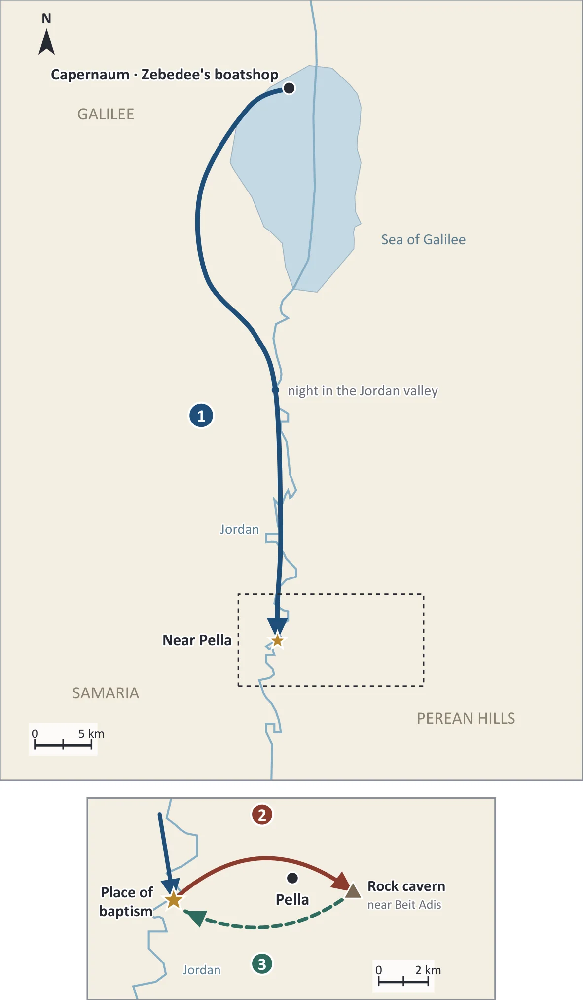
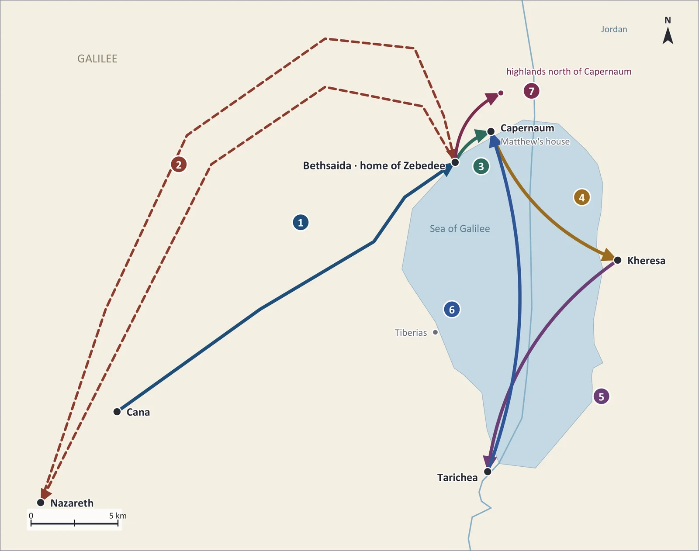
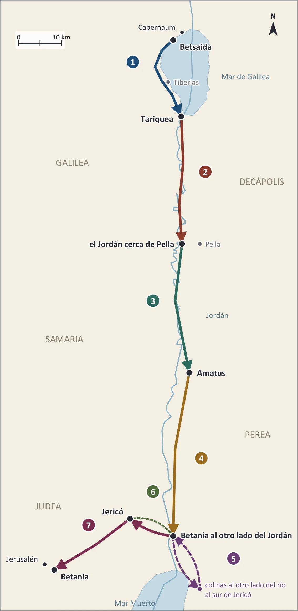
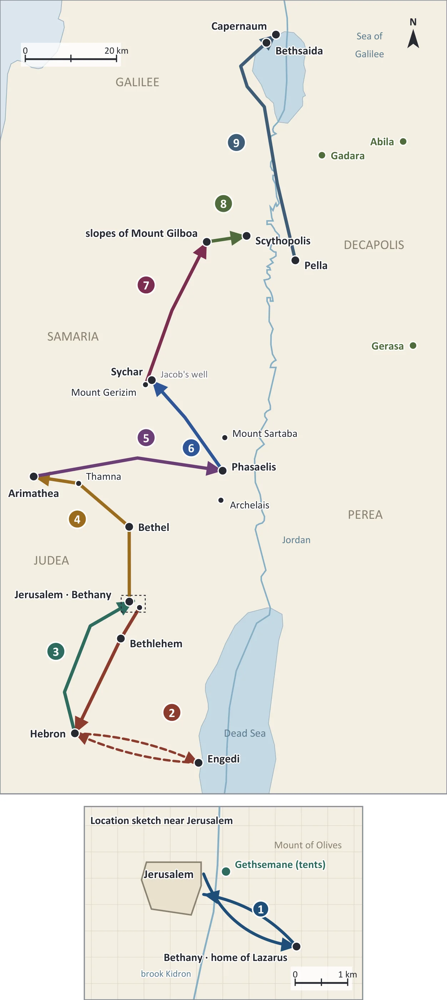
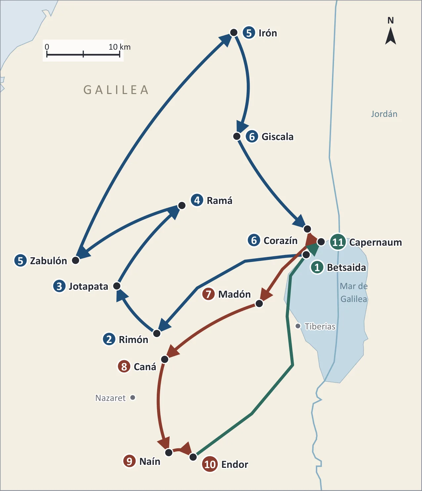
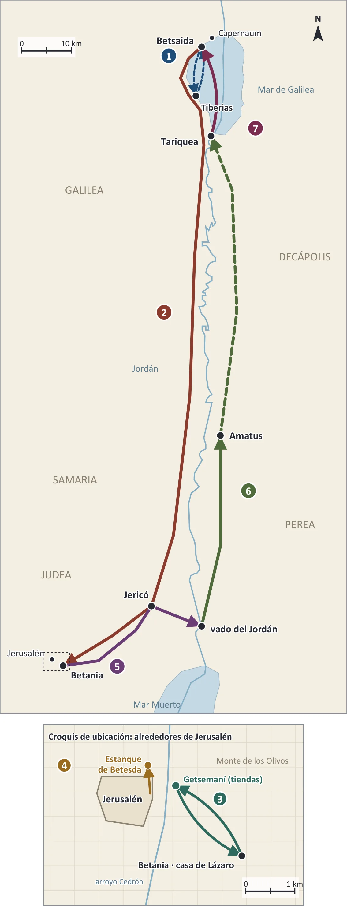

Parte III Juan el Bautista, la preparación y la formación de los apóstoles
Documentos 135–147
Documento 135Juan el Bautistamarzo de 7 a. de J.C. – enero de 28 d. de J.C.
| Acontecimiento | El libro de Urantia | Biblia |
|---|---|---|
| El nacimiento de Juan | 135:0.1–5 | Lc 1:57-80 |
| Juan el Bautista nació el 25 de marzo del año 7 a. de J.C., conforme a la promesa que Gabriel había hecho a Elizabeth, y fue circuncidado al octavo día. Creció como un niño común en la Ciudad de Judá, al oeste de Jerusalén, y sus padres, el sacerdote Zacarías y Elizabeth, le dieron una formación mental y espiritual sistemática.Difiere de la BibliaEl Evangelio de Lucas narra la imposición del nombre de Juan y cómo se desató la lengua de Zacarías para profetizar, mientras que El libro de Urantia dice que, aparte de la visita de Gabriel y el sueño de Zacarías, nada sobrenatural acompañó el nacimiento de Juan. | ||
| 1. Juan Se Hace Nazareo | 135:1.1–4 | Ninguno |
| A los catorce años Juan fue con sus padres a En-Gedi, junto al Mar Muerto, sede meridional de la hermandad nazarea, donde hizo el voto nazareo de por vida y luego ofreció sacrificio en el templo de Jerusalén. A los dieciséis, inspirado por la lectura sobre Elías, comenzó a vestir una prenda de pelo y un cinturón de cuero. | ||
| 2. La Muerte de Zacarías | 135:2.1–4 | Ninguno |
| Cuando Zacarías murió en julio del año 12 d. de J.C., Juan hizo ofrendas de purificación a causa de su voto nazareo. Ese septiembre, en Nazaret, Jesús lo exhortó a volver a casa y cuidar de su madre. Como Juan rechazaba la asignación sacerdotal, el dinero escaseó, de modo que él y Elizabeth se mudaron a Hebrón, y él visitaba En-Gedi cada vez con más frecuencia. | ||
| 3. La Vida de un Pastor | 135:3.1–4 | Ninguno |
| Juan construyó refugios de piedra a lo largo de un arroyo del valle y pastoreaba ovejas con Ezda, un niño huérfano de Bet-sur, alimentándose de carnero, leche de cabra, miel silvestre y langostas. Gran admirador del profeta Daniel, llegó a convencerse de que el antiguo orden terminaba y el reino del cielo se acercaba, mientras su madre le aseguraba que Jesús era el Mesías. | ||
| 4. La Muerte de Elisabet | 135:4.1–6 | Ninguno |
| Tras la muerte de Elizabeth, el 17 de agosto del año 22 d. de J.C., Juan entregó sus rebaños a la hermandad y se quedó dos años y medio en En-Gedi, leyendo a Isaías y Malaquías. Largo tiempo inquieto por la profecía de que Elías debía venir primero, resolvió finalmente ser el heraldo del Mesías y dejó En-Gedi en marzo del año 25 d. de J.C. | ||
| 5. El Reino de Dios | 135:5.1–8 | Ninguno |
| Cuando apareció Juan, los judíos, moldeados por los apocalipsistas, creían que el reino del cielo estaba cerca. Sus esperanzas variaban mucho: un reino terrenal bajo un hijo de David, un cielo nuevo y una tierra nueva, un Hijo del Hombre que vendría del cielo. Así, el anuncio del reino por parte de Juan tenía no menos de media docena de significados. | ||
| 6. Juan Comienza a Predicar | 135:6.1–8 | Mt 3:1-12; Mr 1:1-8; Lc 3:1-15 |
| A comienzos de marzo del año 25 d. de J.C., Juan comenzó a predicar en el vado de Betania, frente a Jericó, bautizando a los judíos para la remisión de los pecados. Durante cuatro meses decenas de miles de personas vinieron a escucharlo. Exigía a fariseos y saduceos frutos dignos de arrepentimiento y daba consejos prácticos a publicanos y soldados.Difiere de la BibliaLos evangelios hablan de pelo de camello y de langostas con miel silvestre; El libro de Urantia describe una prenda de pelo y explica que las piedras son las doce piedras conmemorativas que erigió Josué. Sitúa las palabras sobre el que había de venir en el posterior viaje hacia el norte. | ||
| Sacerdotes y levitas preguntan si Juan es el Mesías | 135:6.6 | Jn 1:19-28 |
| En mayo, mientras Juan seguía en el vado de Betania, los sacerdotes y levitas enviaron una delegación para preguntarle si afirmaba ser el Mesías y con qué autoridad predicaba. Juan les dijo que contaran a sus amos que habían oído la voz que clama en el desierto, como dijo Isaías.Difiere de la BibliaEl Evangelio de Juan lo presenta negando ser el Cristo, Elías y el profeta en un solo diálogo, mientras que El libro de Urantia lo hace responder aquí solo con las palabras de Isaías y sitúa las negaciones con una segunda delegación en Pella. | ||
| 7. Juan Viaja al Norte | 135:7.1–3 | Mt 3:11; Mr 1:7-8; Lc 3:16-18 |
| Juan viajó hacia el norte remontando el Jordán, deteniéndose en más de una docena de lugares. Nunca dudó del reino venidero, pero no estaba seguro de que Jesús fuera a ser su gobernante. En Adán, cuando sus discípulos le preguntaron si él era el Mesías, habló por primera vez de uno mayor que vendría después de él y que bautizaría con el Espíritu Santo.Difiere de la BibliaLos evangelios sitúan estas palabras en la predicación general de Juan en el Jordán, mientras que El libro de Urantia las sitúa por primera vez en Adán, en respuesta a la pregunta de sus discípulos; falta la mención del bautismo con fuego que hacen Mateo y Lucas. | ||
| Mapa 18El bautismo cerca de Pella y los cuarenta días en las colinas de Perea13 de enero – 23 de febrero de 26 d. de J.C. | ||
| 8. Encuentro de Jesús y JuanMapa 18-① De Capernaum al Jordán cerca de PellaMapa 18-② Cuarenta días en las colinas de Perea | 135:8.1–7 | Mt 3:13-17; Mr 1:9-11; Lc 3:21-22 |
| El 13 de enero del año 26 d. de J.C., Jesús dejó sus herramientas en el astillero de Capernaum y fue a Pella con sus hermanos Santiago y Judá. Al mediodía del día siguiente Juan bautizó a los tres en el Jordán. Los cuatro hombres que estaban en el agua vieron una aparición sobre Jesús y oyeron una voz que lo llamaba Hijo amado; Jesús partió luego hacia las colinas del este.Difiere de la BibliaLos evangelios presentan a Jesús llegando solo, los cielos que se abren y el Espíritu que desciende como paloma, mientras que El libro de Urantia dice que fue bautizado con sus dos hermanos y que solo los cuatro vieron la aparición y oyeron la voz, sin ninguna paloma. | ||
| 9. Los Cuarenta Días de Predicación | 135:9.1–9 | Jn 1:19-34 |
| Durante los cuarenta días de Jesús en las colinas, Juan predicaba con nueva certeza mientras sus discípulos debatían la naturaleza del Mesías. Una delegación de Jerusalén llegó a Pella preguntándole quién era, y el 23 de febrero Juan proclamó que Jesús, que regresaba, era el Hijo de Dios. Al día siguiente los dos se separaron por última vez.Difiere de la BibliaEl Evangelio de Juan presenta a Jesús al día siguiente del interrogatorio de la delegación, mientras que El libro de Urantia dice que la delegación llegó unas tres semanas después de la partida de Jesús y que la proclamación tuvo lugar el 23 de febrero, después de los cuarenta días. | ||
| Una nueva delegación de Jerusalén | 135:9.4 | Jn 1:19-28 |
| Unas tres semanas después de la partida de Jesús, una nueva delegación de los sacerdotes y fariseos de Jerusalén llegó a Pella y preguntó a Juan si era Elías, el profeta que Moisés había prometido, o el Mesías. Él lo negó todo y dijo que uno que había estado entre ellos regresaría y los bautizaría con el Espíritu Santo.Difiere de la BibliaEl Evangelio de Juan sitúa este diálogo en Betania, al otro lado del Jordán, mientras que El libro de Urantia lo sitúa con una segunda delegación en Pella y describe al que había de venir como alguien que había estado entre ellos y estaba a punto de regresar. | ||
| «Mirad al Hijo de Dios»: la proclamación de Juan | 135:9.7 | Jn 1:29-34 |
| Temprano el sábado 23 de febrero, mientras Jesús se acercaba desde el norte, Juan se subió a una gran roca y lo proclamó el Hijo de Dios, el liberador del mundo. Lo llamó el que venía después de él y, sin embargo, era antes que él, y atestiguó que había visto al espíritu divino descender sobre él y había oído la voz de Dios.Difiere de la BibliaEl Evangelio de Juan lo llama el Cordero de Dios que quita el pecado del mundo y dice que Juan no lo conocía, mientras que El libro de Urantia dice «el Hijo de Dios, el liberador del mundo» y no menciona ninguna paloma. | ||
| 10. Juan Viaja al Sur | 135:10.1–3 | Ninguno |
| El 3 de marzo del año 26 d. de J.C., Juan y los discípulos que le quedaban se dirigieron al sur, mientras que alrededor de una cuarta parte de sus seguidores fue a Galilea en busca de Jesús. Cerca de Adán, Juan atacó a Herodes Antipas por haber tomado la esposa de otro hombre. De vuelta en el vado de Betania hacia junio, fue apresado por agentes de Herodes en la madrugada del 12 de junio. | ||
| 11. Juan en la Carcel | 135:11.1–4 | Mt 14:1-4 |
| Juan languideció en la prisión durante más de un año y medio, tentado a menudo de dudar de la misión de Jesús. Meses después de su encarcelamiento dijo a sus discípulos que Jesús debía crecer mientras que él debía menguar. Pocos días antes de su muerte envió mensajeros a preguntar si Jesús era el Mesías, y recibió la última palabra del Maestro.Difiere de la BibliaEl Evangelio de Mateo dice que Juan fue encarcelado por reprender a Herodes a causa de Herodías, la esposa de su hermano Felipe, mientras que El libro de Urantia da como causas tanto el temor de Herodes a una rebelión como su resentimiento por las críticas de Juan a sus asuntos conyugales. | ||
| Los discípulos de Juan le informan de la obra de Jesús | 135:11.2 | Jn 3:25-36 |
| Varios meses después de su encarcelamiento, los discípulos de Juan se quejaron de que Jesús festejaba con publicanos y pecadores y, sin embargo, no hacía nada para liberarlo. Juan respondió que él no era el Mesías sino uno enviado antes para preparar el camino, y que se regocijaba como el amigo del novio: «El debe aumentar, yo, disminuir».Difiere de la BibliaEl Evangelio de Juan registra estas palabras cuando Juan todavía bautizaba, tras una discusión sobre la purificación, mientras que El libro de Urantia las sitúa en la prisión varios meses después de su arresto. | ||
| El último mensaje de Jesús a Juan | 135:11.3–4 | Mt 11:2-30; Lc 7:18-35 |
| Al darse cuenta de que había pronunciado una profecía, Juan nunca volvió a dudar del todo de Jesús, pero se sentía profundamente decepcionado de que Jesús no lo liberara. Días antes de su muerte envió a dos discípulos a preguntar si Jesús era el Mesías. Jesús respondió que no había olvidado a Juan y que a los pobres se les predican buenas nuevas; esta fue la última palabra que Juan recibió de él.Difiere de la BibliaLos evangelios presentan a Jesús mencionando que los ciegos ven y los muertos resucitan, y luego elogiando a Juan ante la multitud, mientras que en El libro de Urantia la respuesta no enumera ningún milagro y lleva el consuelo de que Juan no ha sido olvidado. | ||
| 12. La Muerte de Juan el Bautista | 135:12.1–7 | Mt 14:5-12; Mr 6:14-29; Lc 9:7-9 |
| Juan estuvo preso en la prisión de la fortaleza de Macaerus. Herodes temía una rebelión si lo liberaba y un motín si lo mataba. En un banquete de cumpleaños en el palacio de Macaerus, Herodes, ebrio, prometió a la hija de Herodías lo que ella pidiera; por indicación de su madre, ella pidió la cabeza de Juan, y él fue decapitado esa misma noche.Difiere de la BibliaLos evangelios no nombran el lugar, mientras que El libro de Urantia identifica la fortaleza y el palacio de Macaerus en Perea y añade que Herodes hizo su promesa cargado de vino; por lo demás, la historia es muy parecida. | ||
Mapa 18El bautismo cerca de Pella y los cuarenta días en las colinas de Perea
13 de enero – 23 de febrero de 26 d. de J.C. · Documentos 135–137

- ①De Capernaum al Jordán cerca de PellaJusto antes del descanso del mediodía del domingo 13 de enero del año 26 d. de J.C., dejó sus herramientas en el astillero, diciendo: «Ha llegado mi hora», y partió hacia Pella con sus hermanos Santiago y Judá. Pasaron la noche en el valle del Jordán y llegaron al lugar donde Juan bautizaba hacia el mediodía del día siguiente. [135:8.2–3]
- ②Cuarenta días en las colinas de PereaAl salir del agua, se dirigió hacia las colinas del este, y nadie volvió a verlo durante cuarenta días. Vivió en una antigua caverna en la roca, en la ladera de las colinas cerca de una aldea llamada en otro tiempo Beit Adis, y bebía de un pequeño manantial cercano a este refugio rocoso. [135:8.6; 136:3.2; 136:4.14]
- ③Bajada a PellaTemprano por la mañana del sábado 23 de febrero, bajó de las colinas para reunirse con la comitiva de Juan acampada en Pella. Llevó a un muchacho que se había lastimado a casa de sus padres en la cercana aldea de Pella. [137:0.1]
Documento 136El Bautismo y los Cuarenta Díasenero de 26 d. de J.C.
| Acontecimiento | El libro de Urantia | Biblia |
|---|---|---|
| (Introducción) | 136:0.1–2 | Ninguno |
| Jesús comenzó su obra pública en el apogeo del interés por la predicación de Juan, cuando los judíos esperaban ansiosamente al Mesías. Juan era un trabajador entusiasta y vehemente, mientras que Jesús era un obrero sereno y feliz. El mensaje de Juan era el arrepentimiento; Jesús siempre hacía seguir el arrepentimiento por el evangelio, la buena nueva del reino. | ||
| 1. Los Conceptos del Mesías Esperado | 136:1.1–6 | Ninguno |
| Los judíos se imaginaban al libertador como el siervo del Señor, el hijo de David, el Hijo del Hombre o el Hijo de Dios, y esperaban un Mesías que, como Moisés, los liberaría milagrosamente de Roma. Sin embargo, no tenían ningún concepto de las naturalezas humana y divina unidas en una sola personalidad; esa encarnación se reveló solamente en Jesús. | ||
| 2. El Bautismo de Jesús | 136:2.1–8 | Mt 3:13-17; Mr 1:9-11; Lc 3:21-22 |
| En el año 26 d. de J.C., con casi treinta y un años y medio de edad, Jesús fue bautizado por Juan siguiendo el ejemplo de los israelitas piadosos, un bautismo de consagración, no de arrepentimiento. Su Ajustador interior partió y regresó como Ajustador Personalizado, declarándolo Hijo amado. Ese día terminó la vida puramente humana de Jesús.Difiere de la BibliaLos Evangelios dicen que el Espíritu Santo descendió como una paloma, mientras que El libro de Urantia lo explica como el regreso del Ajustador Personalizado, una forma que sólo Jesús vio, mientras que la voz la oyeron también Juan y los dos hermanos de Jesús. | ||
| 3. Los Cuarenta Días | 136:3.1–7 | Mt 4:1-11; Mr 1:12-13; Lc 4:1-13 |
| Antes de su bautismo, Jesús se había encontrado con Caligastia en el Monte Hermón y lo había vencido. Después del bautismo pasó cuarenta días en las colinas de Perea planificando su obra pública. Allí se encontró con Gabriel y con el Padre de la Constelación de Edentia, y se le dijo que su soberanía ya estaba completa y que el resto de su vida quedaba a su elección.Difiere de la BibliaLos Evangelios dicen que el Espíritu lo llevó al desierto para ayunar cuarenta días y ser tentado por el diablo, mientras que El libro de Urantia sitúa la verdadera lucha en el Monte Hermón, antes del bautismo, y llama a los cuarenta días un tiempo de planificación y de decisión, no de ayuno. | ||
| 4. Los Planes para el Ministerio Público | 136:4.1–14 | Ninguno |
| Jesús decidió no enseñar junto a Juan hasta que la obra de Juan hubiese terminado y, siguiendo las instrucciones de Emanuel, no dejar ningún escrito permanente. No ayunó ni sufrió tentación, y al tercer día resolvió elegir siempre la voluntad del Padre. Vivió en una caverna rocosa cerca de la aldea de Beit Adis. | ||
| 5. La Primera Gran Decisión | 136:5.1–6 | Ninguno |
| Al tercer día Jesús contempló las huestes celestiales de Nebadon reunidas, incluidas doce legiones de serafines. Resolvió no utilizarlas a menos que la voluntad del Padre fuera evidente y entregó su mando a su Ajustador Personalizado, quien le dijo que podía impedir los actos que implicaran el espacio, pero no los que implicaran el tiempo. | ||
| 6. La Segunda Decisión | 136:6.1–11 | Mt 4:2-4; Lc 4:3-4 |
| Cuando sintió hambre al tercer día, Jesús decidió no crear alimento mediante sus poderes de creador sino obtenerlo como un hombre corriente. Resolvió usar el poder sobrehumano en favor de los demás, pero nunca para sí mismo, y resumió la decisión con la Escritura que dice que no sólo de pan vivirá el hombre.Difiere de la BibliaLos Evangelios dicen que el diablo lo tentó, después de cuarenta días de ayuno, a convertir las piedras en pan, mientras que El libro de Urantia lo presenta como una decisión propia de Jesús ante el hambre del tercer día; el desafío del adversario es una descripción posterior. | ||
| 7. La Tercera Decisión | 136:7.1–4 | Mt 4:5-7; Lc 4:9-12 |
| Jesús decidió ejercer el cuidado humano normal de su seguridad personal, pero rechazar la intervención sobrehumana aun en peligro mortal. Sentado al borde de un precipicio, sabía que podía saltar sin daño, pero rehusó una exhibición que desafiara la ley de la gravedad de su Padre, y mantuvo esta decisión durante toda su vida.Difiere de la BibliaLos Evangelios dicen que el diablo puso a Jesús sobre el pináculo del templo y le dijo que se arrojase abajo, mientras que El libro de Urantia presenta una decisión a la que Jesús llegó solo, al borde de un precipicio rocoso en las colinas. | ||
| 8. La Cuarta Decisión | 136:8.1–8 | Mt 4:8-10; Lc 4:5-8 |
| Jesús decidió no usar el poder sobrehumano, las señales ni los prodigios para ganar la atención y la lealtad de la gente. Conocía atajos como aparentar caminar por el aire desde el pináculo del templo durante la Pascua, pero rehusó transigir con la sabiduría o la riqueza del mundo y eligió edificar el reino de manera natural y paciente.Difiere de la BibliaLos Evangelios dicen que el diablo le mostró desde un monte alto todos los reinos del mundo y se los ofreció a cambio de su adoración, mientras que El libro de Urantia describe la decisión propia de Jesús acerca del uso de sus poderes para atraer seguidores. | ||
| 9. La Quinta Decisión | 136:9.1–13 | Ninguno |
| Al elegir la manera de establecer el reino de Dios, Jesús rechazó comenzarlo con milagros y despliegues de poder o con autoridad política y temporal. Concluyó que los pasajes mesiánicos que su madre le había enseñado no se referían a él, y resolvió volver a Galilea, proclamar serenamente el reino y dejar los detalles al Padre. | ||
| 10. La Sexta Decisión | 136:10.1 | Ninguno |
| El último día de su aislamiento, antes de bajar para reunirse con Juan y sus discípulos, Jesús tomó su decisión final. Prometió a su Ajustador Personalizado que también en todos los demás asuntos se sometería a la voluntad del Padre, y bajó de la montaña con el rostro radiante de la gloria de la victoria espiritual y del logro moral. | ||
Documento 137El Tiempo de Espera en Galileafebrero – junio de 26 d. de J.C.
| Acontecimiento | El libro de Urantia | Biblia |
|---|---|---|
| (Introducción)Mapa 18-③ Bajada a Pella | 137:0.1 | Ninguno |
| En las primeras horas del sábado 23 de febrero del año 26 d. de J.C., Jesús bajó de las colinas y se reunió con el grupo de Juan, que acampaba en Pella. Durante todo ese día se mezcló con la multitud y ministró a un muchacho que se había lastimado en una caída, llevándolo a salvo a sus padres en la vecina aldea de Pella. | ||
| 1. La Selección de los Primeros Cuatro Apóstoles | 137:1.1–8 | Mt 4:18-22; Mr 1:16-20; Lc 5:1-11; Jn 1:35-42 |
| Ese sábado, Andrés, que había acompañado a Jesús con el muchacho herido, pidió seguirlo y se convirtió en el primer apóstol. Su hermano Simón, después de consultar a Juan, fue el segundo y recibió el nombre de Pedro. Esa noche, Santiago y Juan, los hijos de Zebedeo, de regreso de buscarlo por las colinas, fueron en busca de Jesús y fueron aceptados.Difiere de la BibliaMateo, Marcos y Lucas muestran a Jesús llamando a pescadores que trabajaban junto al mar de Galilea, mientras que El libro de Urantia dice que Andrés, Simón y luego Santiago y Juan se le unieron en el campamento de Juan cerca de Pella. | ||
| Mapa 19De Pella por Nazaret a Caná y Betsaida24 de febrero – 2 de marzo de 26 d. de J.C. | ||
| 2. La Elección de Felipe y NatanaelMapa 19-① De Pella a Nazaret | 137:2.1–9 | Jn 1:43-51 |
| El 24 de febrero Jesús se despidió de Juan cerca de Pella, mientras que Esdras rechazó a Jesús y llevó a muchos discípulos hacia el sur para formar una secta aparte. Camino de Galilea, Jesús le dijo a Felipe de Betsaida que lo siguiera y aceptó a Natanael de Caná, a quien Felipe trajo. Pasaron la noche en la casa de José en Nazaret.Difiere de la BibliaEl Evangelio de Juan dice que Jesús vio de antemano a Natanael debajo de la higuera y que Natanael lo confesó Hijo de Dios, mientras que en El libro de Urantia no hay tal conocimiento previo ni tal confesión; Felipe va a buscarlo debajo de una morera. | ||
| 3. La Visita a CapernaumMapa 19-② Por Magdala a CapernaumMapa 19-③ La boda en Caná | 137:3.1–7 | Ninguno |
| Al día siguiente Jesús envió a sus apóstoles por delante a una boda en Caná, vio a su hermano Judá en Magdala y llegó a la casa de Zebedeo en Capernaum el lunes por la noche. María, la familia y los discípulos, esperando que se cumpliera la promesa de Gabriel y que Jesús mostrara su poder mesiánico en Caná, partieron hacia Caná el martes. | ||
| 4. Las Bodas de Caná | 137:4.1–17 | Jn 2:1-11 |
| Casi mil invitados llegaron el miércoles a la boda de Noemí y Johab, con la esperanza de ver un prodigio. Jesús rechazó la súplica de María de que se revelara, pero cuando se acabó el vino sintió compasión por su madre, que lloraba, y por su deseo el agua de seis tinajas de piedra se convirtió en vino. El libro de Urantia lo llama un caso de aniquilación del tiempo.Difiere de la BibliaEl Evangelio de Juan lo presenta como la primera señal, en la que Jesús ordena llenar las tinajas para manifestar su gloria, mientras que El libro de Urantia dice que ocurrió por su deseo pero sin su intención, y que el propio Jesús fue el más sorprendido. | ||
| Mapa 20El llamamiento y la ordenación de los apóstoles — Betsaida y el mar de Galileafebrero de 26 d. de J.C. – enero de 27 d. de J.C. | ||
| 5. De Regreso a CapernaumMapa 19-④ A BetsaidaMapa 20-① De Caná a Betsaida | 137:5.1–4 | Mt 4:13-16; Lc 4:31; Jn 2:12 |
| La mañana siguiente a la boda, Jesús partió con seis apóstoles hacia la casa de Zebedeo en Betsaida, pidiéndoles que no hablaran del vino. Esa noche los apóstoles no lograron comprender su misión. Después de una noche de insomnio junto al lago, Jesús decidió no negar abiertamente que era el Mesías y les dijo que esperaran hasta que terminara la predicación de Juan.Difiere de la BibliaEl Evangelio de Juan dice que Jesús bajó a Capernaum con su madre, sus hermanos y sus discípulos, mientras que El libro de Urantia dice que partió sin despedirse de su familia, yendo sólo con seis apóstoles a la casa de Zebedeo en Betsaida. | ||
| 6. Los Acontecimientos de un Día Sábado | 137:6.1–6 | Ninguno |
| La primera aparición pública de Jesús después de su bautismo tuvo lugar en la sinagoga de Capernaum el sábado 2 de marzo del año 26 d. de J.C. Ante una multitud que esperaba prodigios, leyó de Isaías y sólo dijo que con paciencia verían la gloria de Dios. Esa tarde enseñó a los apóstoles desde una barca y les dijo que volvieran a su trabajo habitual y esperaran. | ||
| 7. Cuatro Meses de Capacitación | 137:7.1–14 | Ninguno |
| Durante cuatro meses, de marzo a junio, Jesús celebró más de cien sesiones con los seis apóstoles y con su hermano Santiago, mientras María casi perdía la esperanza. Les explicó quiénes eran los fariseos, los saduceos, los esenios, los zelotes, los herodianos y los samaritanos, y dijo que no se uniría a ninguno de esos grupos. | ||
| 8. El Sermón Sobre el Reino | 137:8.1–18 | Ninguno |
| Al enterarse del arresto de Juan, Jesús hizo su último trabajo en el banco de carpintero el 18 de junio del año 26 d. de J.C. El sábado 22 de junio, en la sinagoga de Capernaum, predicó su primer gran sermón sobre el reino, declarando que no es de este mundo, que ya está dentro de ellos y que se entra en él por la fe. Aproximadamente un tercio de los oyentes creyeron. | ||
Mapa 19De Pella por Nazaret a Caná y Betsaida
24 de febrero – 2 de marzo de 26 d. de J.C. · Documento 137

- ①De Pella a NazaretEl domingo 24 de febrero del año 26 d. de J.C., por la mañana, Jesús se despidió de Juan el Bautista junto al río, cerca de Pella. Camino de Galilea con sus cuatro discípulos-apóstoles, a la vera del camino cerca del Jordán, se encontró con Felipe y Natanael. Cruzaron el Jordán y, pasando por Naín, llegaron a Nazaret ya tarde esa noche y pernoctaron con José en la casa de la infancia de Jesús. [137:2.1–9]
- ②Por Magdala a CapernaumAl día siguiente envió a sus apóstoles por delante a Caná (línea de trazos), se detuvo en Magdala para ver a su hermano Judá y llegó a Capernaum el lunes por la noche, yendo directamente a la casa de Zebedeo. [137:3.1; 137:3.4]
- ③La boda en CanáEl martes todos fueron a Caná. Para el mediodía del miércoles habían llegado casi mil invitados al banquete de bodas de Noemí y Johab. [137:3.6; 137:4.1]
- ④A BetsaidaMuy temprano a la mañana siguiente, él y sus seis apóstoles fueron directamente a la casa de Zebedeo en Betsaida. A la mañana siguiente fue con Zebedeo al taller de barcas. El sábado 2 de marzo hizo su primera aparición pública después de su bautismo, en la sinagoga de Capernaum. [137:5.1–4; 137:6.1]
Mapa 20El llamamiento y la ordenación de los apóstoles — Betsaida y el mar de Galilea
febrero de 26 d. de J.C. – enero de 27 d. de J.C. · Documentos 137–140

- ①De Caná a BetsaidaFebrero de 26 d. de J.C.: muy temprano a la mañana siguiente de la boda en Caná, Jesús y sus seis apóstoles fueron directamente a la casa de Zebedeo en Betsaida. Durante el tiempo de espera de marzo, abril, mayo y junio celebró con ellos más de cien sesiones. [137:5.1–2; 137:7.1–4]
- ②Enviados de dos en dos; Jesús a NazaretEl domingo 23 de junio envió a los seis de dos en dos: Santiago y Juan a Queresa, Andrés y Pedro a Capernaum, Felipe y Natanael a Tariquea. Mientras tanto, Jesús fue a Nazaret para visitar a su familia; al cabo de dos semanas regresaron a la casa de Zebedeo. [138:1.1; 138:1.4]
- ③Llamamiento de Mateo y de Simón el ZeloteEn la oficina de impuestos de Capernaum llamó a Mateo; después de un almuerzo al mediodía en la casa de Mateo llamaron a Simón el Zelote. Esa noche Mateo ofreció un banquete. [138:3.1–4; 139:7.1]
- ④En barca a QueresaAl día siguiente, los nueve cruzaron en barca a Queresa para llamar a Santiago y Judas, los hijos gemelos de Alfeo. [138:4.1–3]
- ⑤En barca a TariqueaLos once cruzaron en barca a Tariquea, donde Tomás y Judas Iscariote se reunieron con ellos en el desembarcadero de los botes de pesca y fueron recibidos. [138:4.4; 138:5.1]
- ⑥De regreso en barca a CapernaumDespués de otro día y una noche de descanso partieron en barca hacia Capernaum. Zebedeo y Salomé habían cedido su amplia casa a Jesús y a sus doce apóstoles. [138:5.3–4]
- ⑦La ordenación de los docePoco antes del mediodía del domingo 12 de enero del año 27 d. de J.C., reunió a los apóstoles a la orilla del lago y fue con ellos a las tierras altas al norte de Capernaum para su ordenación, regresando esa noche a la casa de Zebedeo. El sábado siguiente, en la misma tierra alta, consagró a los doce. [140:0.1–2; 140:6.1; 140:9.1]
Documento 138La Capacitación de los Mensajeros del Reinojunio de 26 d. de J.C. – enero de 27 d. de J.C.
| Acontecimiento | El libro de Urantia | Biblia |
|---|---|---|
| (Introducción) | 138:0.1–2 | Ninguno |
| Después del sermón sobre el reino, Jesús llamó sólo a los seis apóstoles y les reveló sus planes de visitar las ciudades alrededor del mar de Galilea. Sus hermanos Santiago y Judá se sintieron heridos al quedar excluidos, y desde Caná él se había mantenido apartado de su madre; esta distancia con su familia duró hasta después de la resurrección. Sólo Ruth, la menor, permaneció leal. | ||
| 1. Las Instrucciones FinalesMapa 20-② Enviados de dos en dos; Jesús a Nazaret | 138:1.1–5 | Ninguno |
| El 23 de junio del año 26 d. de J.C., Jesús envió a los seis de dos en dos para hacer obra personal, prohibiéndoles bautizar y aconsejándoles no predicar en público: Santiago y Juan a Queresa, Andrés y Pedro a Capernaum, Felipe y Natanael a Tariquea. También le dijo a cada uno que eligiera un nuevo apóstol, para completar doce. | ||
| 2. La Selección de los Seis | 138:2.1–10 | Ninguno |
| En su primera misión de dos semanas, los seis descubrieron el valor del contacto personal y regresaron para presentar a sus candidatos. Por voto unánime fueron aceptados Mateo Leví, Tomás Dídimo, Santiago Alfeo, Judas Alfeo, Simón Zelote y Judas Iscariote, elegidos respectivamente por Andrés, Felipe, Santiago, Juan, Pedro y Natanael. | ||
| 3. El Llamado de Mateo y SimónMapa 20-③ Llamamiento de Mateo y de Simón el Zelote | 138:3.1–8 | Mt 9:9-13; Mr 2:13-17; Lc 5:27-32 |
| Al día siguiente Jesús le dijo a Mateo en la oficina de impuestos de Capernaum: «Sígueme», y después del almuerzo llamó a Simón Zelote, el candidato de Pedro. Esa noche, en el banquete de Mateo, los fariseos objetaron que Jesús comiera con publicanos y pecadores, y él respondió que no había venido a llamar a los justos sino a los pecadores.Difiere de la BibliaLos Evangelios muestran a Jesús llamando a Mateo al pasar junto a la oficina de impuestos, mientras que El libro de Urantia dice que visitó a un Mateo ya preparado después de la nominación de Andrés y la votación, y que llamó a Simón Zelote ese mismo día. | ||
| 4. El Llamado de los GemelosMapa 20-④ En barca a QueresaMapa 20-⑤ En barca a Tariquea | 138:4.1–4 | Ninguno |
| Al día siguiente los nueve cruzaron en barca a Queresa y llamaron a Santiago y Judas, los hijos gemelos de Alfeo, nominados por Santiago y Juan Zebedeo. Jesús les enseñó a no negarse nunca a comer con fariseos, pecadores, publicanos o romanos, y esa noche enseñó por primera vez sobre el origen, la naturaleza y el destino de los espíritus impuros. | ||
| 5. El Llamado de Tomás y JudasMapa 20-⑥ De regreso en barca a Capernaum | 138:5.1–4 | Ninguno |
| En Tariquea Jesús aceptó a Tomás, el candidato de Felipe, aunque le faltaba fe, y a Judas Iscariote, el candidato de Natanael. Después de instruir a los doce sobre el Espíritu Santo y el ministerio de los serafines, fue a Capernaum para alojarse en la casa que Zebedeo les había cedido. Esa noche Judas preguntó por qué Jesús no liberaba a Juan. | ||
| 6. La Semana de Capacitación Intensiva | 138:6.1–5 | Ninguno |
| La semana siguiente los seis nuevos apóstoles fueron instruidos intensamente por quienes los habían nominado. Jesús fijó el miércoles como día semanal de descanso y les exhortó a no crear leyendas ni un culto en torno a él, sino a proclamar el evangelio del reino y la revelación del Padre. Planeó meses de obra tranquila alrededor del mar de Galilea. | ||
| 7. Otra Desilusión | 138:7.1–7 | Ninguno |
| Temprano el primer domingo, Pedro, Santiago Zebedeo y Judas Iscariote preguntaron qué puestos ocuparían en el reino, y Jesús los reprendió, diciendo que su reino no es de este mundo. Los apóstoles le prometieron su lealtad. Como escaseaban los fondos, Jesús les hizo alternar dos semanas de pesca con dos semanas de obra personal, plan que se siguió hasta el fin del año 26 d. de J.C. | ||
| 8. La Primera Labor de los Doce | 138:8.1–11 | Ninguno |
| A mediados de agosto del año 26 d. de J.C., los doce salieron de dos en dos a los campos que Andrés les asignó, y Jesús se unía a cada pareja por turno. Enseñó el perdón del pecado por la fe y les dijo que no hablaran del encarcelamiento de Juan, de la voz en el bautismo ni del vino de Caná. También enseñó que las mujeres son iguales a los hombres en el reino del cielo. | ||
| 9. Cinco Meses de Prueba | 138:9.1–3 | Ninguno |
| Los cinco meses de alternar la pesca con la obra personal fueron una prueba agotadora para los doce, pero permanecieron leales y llegaron a sentir que Jesús era su amigo más cercano. Mientras tanto su familia, excepto Ruth, prácticamente lo abandonó. Los apóstoles trabajaron en Capernaum, Corazín, Magdala, Caná y otros lugares, y dispusieron el sustento de sus familias. | ||
| 10. La Organización de los Doce | 138:10.1–11 | Ninguno |
| Los doce se organizaron: Andrés como presidente; Pedro, Santiago y Juan como acompañantes personales de Jesús; Felipe como mayordomo; Natanael a cargo de las familias; Mateo como agente fiscal; Tomás a cargo del itinerario; los gemelos Alfeo encargados de las multitudes; Simón Zelote a cargo de la recreación; Judas como tesorero. El 12 de enero del año 27 d. de J.C., Jesús los ordenó formalmente embajadores del reino. | ||
Documento 139Los Doce Apóstoles
| Acontecimiento | El libro de Urantia | Biblia |
|---|---|---|
| La elección de los doce apóstoles | 139:0.1–4 | Mt 10:2-4; Mr 3:13-19; Lc 6:12-16 |
| Aunque Jesús desbarató repetidamente las esperanzas de exaltación personal de sus apóstoles, sólo uno lo abandonó, testimonio del encanto de su vida. Los doce representaban muchos tipos de temperamento, y todos, excepto los gemelos Alfeo, eran egresados de las escuelas de la sinagoga. Llamarlos «ignorantes e incultos» significaba que no estaban instruidos en la tradición rabínica ni en sus métodos de interpretación.Difiere de la BibliaLos Evangelios dicen que Jesús designó a los doce juntos en un monte, mientras que El libro de Urantia dice que primero llamó a seis, cada uno de los cuales nominó luego a otro para completar doce. También señala que a los gemelos Alfeo se les llamaba Tadeo y Lebeo. | ||
| 1. Andrés, el Primer Elegido | 139:1.1–12 | Ninguno |
| Andrés, nacido en Capernaum como el mayor de cinco hijos, era en el año 26 d. de J.C. un pescador soltero de treinta y tres años. Presidente de los doce, era un buen organizador, mejor administrador y el mejor juez de los hombres. Vivió sin celos de su hermano Pedro y finalmente fue crucificado en Patras, en Acaya. | ||
| 2. Simón Pedro | 139:2.1–15 | Ninguno |
| Simón Pedro, pescador casado de Betsaida, se unió a los treinta años. Impulsivo, optimista y elocuente, era un líder nato que admiraba sobre todo la ternura suprema de Jesús. Extraña mezcla de valor y cobardía, negó al Maestro cuando fue ridiculizado. El más grande predicador de los doce, fue crucificado en Roma. | ||
| 3. Santiago Zebedeo | 139:3.1–9 | Ninguno |
| Santiago Zebedeo, pescador y padre de cuatro hijos, se unió a los treinta años; con su hermano Juan recibió el apodo de «hijos del trueno». Sus debilidades eran un temperamento fogoso y unos silencios inexplicables, pero era un pensador equilibrado capaz de ver todos los aspectos de una cuestión. Fue el primer apóstol en morir, pasado a espada por Herodes Agripa. | ||
| 4. Juan Zebedeo | 139:4.1–15 | Ninguno |
| Juan Zebedeo, el apóstol más joven, de veinticuatro años, fue el agente personal de Jesús en los asuntos de la familia. Su debilidad era la vanidad, pero era fiable y audaz, y siguió a Jesús hasta el final la noche de su arresto. Se convirtió en el apóstol del amor, escribió el libro del Apocalipsis en Patmos y murió de muerte natural en Éfeso en el año 103 d. de J.C. | ||
| 5. Felipe el Curioso | 139:5.1–12 | Ninguno |
| Felipe de Betsaida, el quinto apóstol elegido, tenía veintisiete años y se había casado hacía poco. Carente de imaginación pero metódico y fiable, fue el mayordomo del grupo apostólico y un persuasivo obrero personal cuyo método era «ven y ve». Tuvo gran éxito en Samaria y fue crucificado y sepultado en Hierápolis. | ||
| 6. El Honesto Natanael | 139:6.1–9 | Ninguno |
| Natanael, el sexto apóstol, traído por Felipe, tenía veinticinco años, era soltero y el sostén de sus ancianos padres en Caná. Honesto y sin engaño, aunque inclinado al orgullo y al prejuicio, era el filósofo y el narrador del grupo, que aliviaba las tensiones con su humor. Se ocupó de las familias de los apóstoles y murió en la India. | ||
| 7. Mateo Leví | 139:7.1–10 | Ninguno |
| Mateo Leví, el séptimo apóstol, elegido por Andrés, era un recaudador de aduanas de Capernaum de treinta y un años. Como agente fiscal reunía los fondos del grupo y donaba en secreto casi toda su propia fortuna a la obra, cosa que sólo Jesús sabía. Sus notas fueron la base del Evangelio según Mateo, y fue ajusticiado en Lisimaquia, en Tracia. | ||
| 8. Tomás el Dídimo | 139:8.1–13 | Ninguno |
| Tomás Dídimo, el octavo apóstol, elegido por Felipe, era un pescador de Tariquea de veintinueve años, antes carpintero y albañil. Su mente analítica y escéptica lo hacía dudar, pero era honesto y valiente, y una vez tomada una decisión era el primero en decir «¡Vamos!». Veneraba el carácter equilibrado de Jesús y fue ajusticiado en Malta. | ||
| 9. Jacobo y Judas Alfeo | 139:9.1–11 | Ninguno |
| Santiago y Judas, los hijos gemelos de Alfeo, eran pescadores de veintiséis años de las cercanías de Queresa, elegidos por Santiago y Juan Zebedeo. Hombres comunes, sin puntos fuertes ni débiles, se encargaban de las multitudes y de tareas diversas, y alentaban grandemente a la gente común. Leales hasta el fin, después de la crucifixión volvieron a sus familias y a sus redes. | ||
| 11. Simón el Zelote | 139:11.1–11 | Ninguno |
| Simón Zelote, el undécimo apóstol, elegido por Pedro, era un comerciante de Capernaum de veintiocho años y ardiente patriota del partido de los zelotes. Organizaba la recreación del grupo y sobresalía en conducir a la fe a los indecisos, pero nunca se despojó del todo de su nacionalismo. Después de las persecuciones fue a África, donde murió. | ||
| 12. Judas Iscariote | 139:12.1–14 | Ninguno |
| Judas Iscariote, el duodécimo apóstol, elegido por Natanael, nació en Queriot; era el único judeo de los doce, soltero y de treinta años. Tesorero capaz, era un niño mimado que sobrestimaba su propia importancia y guardaba rencores. Después de que Jesús desautorizara públicamente su protesta por la caja de incienso rota, lo traicionó por venganza y finalmente se quitó la vida. | ||
Documento 140La Ordenación de los Doceenero de 27 d. de J.C.
| Acontecimiento | El libro de Urantia | Biblia |
|---|---|---|
| (Introducción)Mapa 20-⑦ La ordenación de los doce | 140:0.1–3 | Ninguno |
| Poco antes del mediodía del domingo 12 de enero del año 27 d. de J.C., Jesús recorrió la orilla del lago llamando a los doce, primero a Andrés y Pedro, luego a Santiago y Juan, y luego a los demás de dos en dos. Los condujo a las tierras altas al norte de Capernaum y comenzó a instruirlos para prepararlos para la ordenación formal. | ||
| 1. La Instrucción Preliminar | 140:1.1–7 | Ninguno |
| Antes de la ordenación, Jesús enseñó a los doce, que estaban sentados, que el reino del Padre es un gobierno eterno establecido en el corazón de los hombres, cuyo poder no reside en ejércitos ni en riquezas. Se entra por su puerta mediante la fe, pero hay que dar los frutos del espíritu, y el que quiera ser grande debe hacerse servidor de todos. | ||
| 2. La Ordenación | 140:2.1–3 | Ninguno |
| Jesús hizo que los doce se arrodillaran en círculo a su alrededor y puso las manos sobre la cabeza de cada uno, comenzando por Judas Iscariote y terminando por Andrés. Luego oró encomendándolos al Padre, y los apóstoles se acercaron en silencio uno por uno para abrazarlo. | ||
| 3. El Sermón de la Ordenación | 140:3.1–21 | Mt 5:1-48; 6:1-34; 7:1-29; Lc 6:20-49 |
| Inmediatamente después de la ordenación, Jesús encargó a sus nuevos embajadores: bienaventurados los pobres de espíritu, los mansos y otros; ellos son la sal de la tierra y la luz del mundo; deben amar a sus enemigos, no juzgar a los demás y reconocer a los falsos profetas por sus frutos. A la puesta del sol bajaron de la montaña sin hacer preguntas.Difiere de la BibliaEl Evangelio de Mateo (capítulos 5–7) presenta esto como el Sermón del monte, escuchado por multitudes asombradas, mientras que El libro de Urantia lo convierte en un encargo de ordenación dirigido sólo a los doce, sin dichos como la jota y la tilde, la puerta estrecha o la casa sobre la roca. | ||
| 4. Vosotros Sois la Sal de la Tierra | 140:4.1–11 | Mt 5:13-16 |
| El libro de Urantia explica que el así llamado Sermón del monte no es el evangelio de Jesús, sino su encargo de ordenación a los doce. La sal era preciosa, incluso se usaba como dinero; la luz no debe atraer la atención sobre sí misma; el carácter fuerte proviene de hacer realmente el bien; y el carácter moral puede crecer.Difiere de la BibliaLos Evangelios sólo dan los dichos sobre la sal y la luz, mientras que El libro de Urantia añade el trasfondo de que la sal se usaba como dinero y un extenso comentario sobre la luz, el carácter y la felicidad. | ||
| 5. El Amor Paterno y el Fraterno | 140:5.1–24 | Mt 5:3-12; Lc 6:20-23 |
| Jesús enseña el amor paternal, amar a los demás como él los ama, más allá del amor fraternal que ama al prójimo como a uno mismo. Las cuatro primeras bienaventuranzas son actitudes de fe; las cuatro últimas (el llanto, la misericordia, la pacificación, la persecución) son reacciones supremas del amor paternal. Las bienaventuranzas se basan en la fe y el amor, no en la ley.Difiere de la BibliaLos Evangelios enumeran las bienaventuranzas en una sola serie, mientras que El libro de Urantia las divide en cuatro actitudes de fe y cuatro reacciones del amor paternal y las ordena de manera diferente. | ||
| 6. La Noche de la Ordenación | 140:6.1–14 | Mt 5:21-48; 6:1-34; 7:1-29 |
| La noche de la ordenación, en el jardín de Zebedeo, Jesús siguió enseñando a los apóstoles a petición de Andrés. Dijo que no había venido a abolir la ley y los profetas sino a cumplirlos, respondió a las preguntas de varios apóstoles y luego mantuvo conversaciones privadas con cada uno hasta el amanecer, sin despertar a los gemelos, que dormían.Difiere de la BibliaLos Evangelios presentan estos dichos como parte de un único sermón en el monte, mientras que El libro de Urantia los sitúa esa noche en el jardín de Zebedeo como respuestas a las preguntas de los apóstoles. | ||
| Los nuevos mandamientos — «Habéis oído … pero yo os digo» | 140:6.3–13 | Mt 5:21-48; 6:1-34; 7:1-29 |
| Cuando Pedro pidió un nuevo mandamiento, Jesús miró más allá de los mandamientos contra el homicidio y el adulterio, hacia el motivo y la intención. Respondiendo a Santiago sobre el divorcio, a Natanael sobre el «ojo por ojo» y a Tomás sobre tener todo en común, enseñó las buenas obras y la oración en secreto, el tesoro en el cielo y la libertad de la ansiedad por el mañana.Difiere de la BibliaMateo prohíbe el divorcio salvo por causa de fornicación e incluye la prohibición de los juramentos y el Padrenuestro, mientras que en El libro de Urantia Jesús se niega a legislar sobre el divorcio, y aquí no se mencionan los juramentos ni el Padrenuestro. | ||
| 7. La Semana Posterior a la Ordenación | 140:7.1–8 | Ninguno |
| Al día siguiente, cuando Tomás pidió quedarse unos días más, Jesús aceptó permanecer hasta el sábado. Esa semana los doce enseñaron a los visitantes que habían llegado a Betsaida desde Tiro, Sidón, Damasco, Jerusalén y otros lugares, y Jesús expuso repetidamente los dos motivos de su misión: revelar al Padre y hacer que los hombres tomaran conciencia de su filiación. | ||
| 8. El Jueves por la Tarde en el Lago | 140:8.1–32 | Ninguno |
| El jueves por la tarde Jesús llevó a Pedro, Santiago y Juan al lago y les habló del reino durante cuatro horas. Trató de hacer la voluntad del Padre y de sus actitudes políticas, sociales y económicas y de la religión personal, enseñando la no resistencia y la no represalia, la abstención en las cuestiones políticas, la importancia de la familia y la influencia de la riqueza sobre los hombres. | ||
| 9. El Día de la Consagración | 140:9.1–4 | Ninguno |
| El sábado siguiente Jesús llevó de nuevo a los apóstoles a la tierra alta de su ordenación para la consagración de los doce. Llamando a cada uno ante sí, les encomendó ir por todo el mundo y predicar la buena nueva del reino, enviándolos como ovejas entre lobos, prudentes como serpientes e inofensivos como palomas. No se dio ninguna enseñanza nueva. | ||
| 10. La Noche Después de la Consagración | 140:10.1–10 | Ninguno |
| Esa noche lluviosa, bajo techo, Jesús enseñó a los doce lo que debían ser, no lo que debían hacer. Le dijo a Tomás que hacerse como niños significa la relación de un hijo con el Padre, respondió a Simón Zelote que todos los hombres son hijos de Dios y le dijo a Juan los tres elementos esenciales del reino del cielo. | ||
Documento 141El Comienzo de la Obra Públicaenero – marzo de 27 d. de J.C.
| Acontecimiento | El libro de Urantia | Biblia |
|---|---|---|
| Mapa 21Por el valle del Jordán hacia Judeaenero – abril de 27 d. de J.C. | ||
| (Introducción)Mapa 21-① De Betsaida a Tariquea | 141:0.1–2 | Ninguno |
| El domingo 19 de enero del año 27 d. de J.C., Jesús y los doce se prepararon para dejar su cuartel general de Betsaida y subir a Jerusalén para la Pascua. Poco antes de partir, Andrés encontró a Jesús llorando en una barca, más abajo en la playa, porque ninguno de los de la familia de su padre José había venido a despedirlos. | ||
| 1. La Salida de GalileaMapa 21-② El Jordán cerca de Pella | 141:1.1–5 | Ninguno |
| Para no atraer la atención de Herodes, Jesús fue hacia el sur con sus apóstoles, deteniéndose la primera noche en Tariquea y permaneciendo luego más de dos semanas en el lugar del Jordán, cerca de Pella, donde había sido bautizado. Jesús no predicó en público, y los apóstoles enseñaron a los discípulos de Juan sin bautizar. | ||
| 2. La Ley de Dios y la Voluntad del Padre | 141:2.1–3 | Ninguno |
| La noche antes de salir de Pella, Jesús enseñó que el reino del cielo no es el gobierno de un Mesías en el trono de David, sino la comprensión y el reconocimiento del gobierno de Dios en el corazón humano. Cuando la voluntad del Padre es vuestra ley, apenas estáis en el reino; cuando se convierte en vuestra voluntad, estáis verdaderamente en él. | ||
| 3. La Estadía en AmatusMapa 21-③ Cerca de Amatus | 141:3.1–8 | Ninguno |
| Jesús y los apóstoles permanecieron cerca de Amatus casi tres semanas; los apóstoles predicaban dos veces al día, y Jesús predicaba cada sábado por la tarde. Andrés se ocupó de los roces entre los discípulos de Juan y los nuevos, mientras Jesús se mantenía al margen. El capítulo describe la personalidad fuerte y varonil de Jesús. | ||
| 4. Las Enseñanzas Sobre el Padre | 141:4.1–9 | Ninguno |
| En Amatus Jesús enseñó un nuevo concepto de Dios: un Padre que ama a cada persona, no un gran contable que registra los pecados. Procuró liberar a los apóstoles de la idea del sacrificio de animales y les enseñó a ministrar a los enfermos distinguiendo tres aflicciones: las enfermedades de la carne, las mentes perturbadas y la posesión por espíritus malignos. | ||
| 5. La Unidad Espiritual | 141:5.1–4 | Ninguno |
| Cuando Santiago Zebedeo preguntó cómo podrían aprender todos a ver las cosas de la misma manera, Jesús respondió que nunca les había enseñado a ver de la misma manera. Lo que pedía era la unidad espiritual, nacida de un motivo común, hacer la voluntad del Padre, y de una meta común, encontrar al Padre y llegar a ser como él. | ||
| 6. La Última Semana en Amatus | 141:6.1–5 | Ninguno |
| En la última semana en Amatus, Simón Zelote llevó ante Jesús a Tejerma, un comerciante persa de Damasco. Como Simón no logró persuadirlo, Jesús le enseñó a no tratar de arrancar el error del corazón de los que buscan, sino a alimentar sus almas hambrientas, y Tejerma entró en el reino. Esa noche Jesús habló sobre la vida nueva en el reino. | ||
| 7. En Betania Más Allá del JordánMapa 21-④ Betania al otro lado del JordánMapa 21-⑤ Tres días en las colinas | 141:7.1–15 | Jn 3:22-24 |
| El 26 de febrero Jesús y sus compañeros fueron al vado cerca de Betania en Perea, donde Juan había proclamado por primera vez el reino, y enseñaron allí durante cuatro semanas. En la segunda semana Jesús descansó tres días con Pedro, Santiago y Juan en las colinas al sur de Jericó, enseñándoles verdades nuevas como la revelación de Dios como Padre y la salvación por la fe.Difiere de la BibliaEl Evangelio de Juan dice que Jesús bautizaba en Judea cuando Juan todavía no había sido encarcelado, mientras que El libro de Urantia dice que Juan ya estaba en la cárcel y que los apóstoles no bautizaban en ese tiempo. | ||
| 8. El Trabajo en JericóMapa 21-⑥ Las visitas de los apóstoles a JericóMapa 21-⑦ Por Jericó a Betania | 141:8.1–3 | Ninguno |
| Durante las cuatro semanas en Betania al otro lado del Jordán, Andrés envió parejas de apóstoles a Jericó, donde iban de casa en casa ministrando a los afligidos. Allí se llevó plenamente a cabo por primera vez el encargo de predicar la buena nueva y ministrar a los enfermos. Camino de Jerusalén, Jesús pasó tres días con una delegación de Mesopotamia. | ||
| Mapa 22Primera obra con los apóstoles — Judea, Samaria y la Decápolisabril de 27 d. de J.C. – enero de 28 d. de J.C. | ||
| 9. La Partida para JerusalénMapa 22-① Betania y Jerusalén | 141:9.1–3 | Ninguno |
| El lunes, último día de marzo, Jesús y los apóstoles subieron hacia Jerusalén y descansaron cinco días en la casa de Lázaro en Betania, que se convirtió en su cuartel general durante la estadía en Jerusalén. El domingo 6 de abril por la mañana, Jesús y los doce fueron juntos a Jerusalén por primera vez. | ||
Mapa 21Por el valle del Jordán hacia Judea
enero – abril de 27 d. de J.C. · Documento 141

- ①De Betsaida a TariqueaEl 19 de enero del año 27 d. de J.C., Jesús y los doce salieron de la casa de Zebedeo hacia el mediodía, subiendo a Jerusalén para la Pascua por el valle del Jordán. El primer día sólo llegaron hasta Tariquea, donde descansaron esa noche. [141:0.1; 141:1.2]
- ②El Jordán cerca de PellaDonde Juan había predicado aproximadamente un año antes y donde Jesús había recibido el bautismo. Permanecieron allí más de dos semanas, y varios cientos de personas vinieron de Galilea, Fenicia, Siria, la Decápolis, Perea y Judea. [141:1.2; 141:2.1]
- ③Cerca de AmatusPermanecieron casi tres semanas. Los apóstoles predicaban dos veces al día, y Jesús predicaba cada sábado por la tarde. Tejerma, un persa que tenía negocios en Damasco, vino a verlo. [141:3.1; 141:6.1]
- ④Betania al otro lado del JordánEl 26 de febrero bajaron por el Jordán hasta el vado cerca de Betania en Perea, donde Juan proclamó por primera vez el reino venidero, y permanecieron allí cuatro semanas. [141:7.1]
- ⑤Tres días en las colinasEn la segunda semana Jesús llevó a Pedro, Santiago y Juan a las colinas del otro lado del río, al sur de Jericó, para descansar tres días, y los enseñó. [141:7.2]
- ⑥Las visitas de los apóstoles a JericóVarias veces por semana Andrés asignaba parejas de apóstoles para subir a Jericó por uno o dos días. Allí se llevó plenamente a efecto por primera vez el encargo de ministrar a los afligidos (línea de puntos). [141:8.1–2]
- ⑦Por Jericó a BetaniaEn el camino de subida a Jerusalén se detuvieron en Jericó, donde Jesús pasó tres días con una delegación de Mesopotamia. El lunes, último día de marzo, subieron por las colinas y descansaron cinco días en la casa de Lázaro en Betania. [141:8.3; 141:9.1–2]
Mapa 22Primera obra con los apóstoles — Judea, Samaria y la Decápolis
abril de 27 d. de J.C. – enero de 28 d. de J.C. · Documentos 141–145

- ①Betania y JerusalénA fines de marzo del año 27 d. de J.C. descansaron cinco días en la casa de Lázaro en Betania, y el domingo 6 de abril bajaron a Jerusalén. Durante abril trabajaron en Jerusalén y salían cada noche a pernoctar en Betania. [141:9.2–3; 142:0.1]
- ②Belén y HebrónA fines de abril la oposición había crecido, y fueron al sur, a Belén y Hebrón, dedicando todo mayo a las visitas de casa en casa. Mientras tanto, Jesús y Abner visitaron la colonia nazarea de En-Gedi (línea de trazos). [142:8.1]
- ③Las tiendas en GetsemaníDe regreso en los primeros días de junio, vivieron todo el mes en tiendas en el parque llamado Getsemaní, en la ladera occidental del Monte de los Olivos. Los fines de semana del sábado solían pasarlos en Betania. [142:8.3–4]
- ④Betel, Arimatea y TamnaA fines de junio fueron al norte, a Samaria, y se detuvieron durante el sábado en Betel. Invitados por los ciudadanos de Arimatea y de Tamna, pasaron más de dos semanas enseñando en esta región. [143:0.1]
- ⑤Arquelais y FasaelisLa primera mitad de agosto establecieron su cuartel general en estas ciudades griegas cercanas al Jordán; fue su primera experiencia de predicar a reuniones casi exclusivamente de gentiles. [143:0.2; 143:1.1]
- ⑥Sicar y el Monte GerizimHacia mediados de mes partieron hacia Sicar. Junto al pozo de Jacob, Jesús habló con Nalda, una mujer samaritana; acamparon en el Monte Gerizim hasta fines de agosto. [143:3.8; 143:5.1; 143:6.2; 143:6.6]
- ⑦El campamento en las laderas del Monte GilboaSeptiembre y octubre los pasaron retirados en este campamento apartado, enseñando a los apóstoles. En octubre tuvo lugar una conferencia de tres semanas con los apóstoles de Juan. [144:0.1; 144:6.1]
- ⑧Las ciudades griegas de la DecápolisEn noviembre y diciembre trabajaron tranquilamente, sobre todo en Escitópolis, Gerasa, Abila y Gadara. El texto no da el orden de las ciudades ni los caminos entre ellas. [144:7.1]
- ⑨Por Pella a CapernaumA fines de diciembre enseñaron de nuevo junto al Jordán, cerca de Pella. En enero del año 28 d. de J.C. se enteraron de la ejecución de Juan; el 13 de enero llegaron a Capernaum y establecieron su cuartel general en la casa de Zebedeo en Betsaida. [144:8.1; 144:9.1; 145:0.1]
Documento 142La Pascua en Jerusalénabril – mayo de 27 d. de J.C.
| Acontecimiento | El libro de Urantia | Biblia |
|---|---|---|
| (Introducción) | 142:0.1–2 | Ninguno |
| Durante abril Jesús y los apóstoles trabajaron en Jerusalén y pasaban las noches en Betania; Jesús se alojaba a veces en la casa de Flavio, un judío griego. El primer día visitó a su viejo amigo Anás, el antiguo sumo sacerdote, pero fue recibido con frialdad y, tras unas palabras sobre el temor y el orgullo, se despidió. | ||
| 1. La Enseñanza en el Templo | 142:1.1–7 | Ninguno |
| Durante todo el mes, Jesús o uno de los apóstoles enseñaba diariamente en el templo. Su mensaje era que el reino está cerca, que se entra en él por la fe en la paternidad de Dios, que el amor es la regla de vida y que la obediencia a la voluntad del Padre es su ley. A través de las multitudes de la Pascua, el evangelio comenzó a difundirse por el imperio y por Oriente. | ||
| 2. La Ira de Dios | 142:2.1–5 | Ninguno |
| Jacobo, un rico comerciante judío de Creta, se reunió en secreto con Jesús en la casa de Flavio y le preguntó cómo se conciliaba el iracundo Yahvé con un Padre amoroso. Jesús dijo que el Padre no cambia, pero que el concepto que el hombre tiene de él ha crecido, y lo ilustró con la disciplina de un padre hacia sus hijos. Jacobo, padre de seis hijos, creyó. | ||
| 3. El Concepto de Dios | 142:3.1–23 | Ninguno |
| Esa noche Jesús enseñó a los apóstoles cómo el concepto de Dios de Israel fue creciendo desde Yahvé, pasando por el Altísimo, El Shaddai, Elohim y el Yahvé Supremo, hasta el Padre que está en el cielo. También explicó que los antiguos diez mandamientos anteriores al Sinaí cedieron el lugar a los nuevos de Moisés y luego a la ley de amar a Dios y al prójimo. | ||
| 4. Flavio y la Cultura Griega | 142:4.1–4 | Ninguno |
| Flavio, un judío griego, temía que su colección de imágenes ofendiera a Jesús, pero Jesús se interesó por cada pieza y aprobó la apreciación de la belleza. Explicó que la prohibición de las imágenes de Moisés era para su propia época. Flavio creyó y fue bautizado por los discípulos de Juan. | ||
| 5. El Discurso Sobre la Certidumbre | 142:5.1–5 | Ninguno |
| Durante la semana de Pascua, en el templo, un hombre de Damasco preguntó cómo podían saber que Jesús había sido enviado por Dios y que podían entrar en el reino. Jesús respondió que, así como ningún padre digno deja a sus hijos en la ansiedad, el Padre celestial no deja en la duda a ningún hijo de la fe, y que amarse unos a otros es la prueba de haber nacido del espíritu. | ||
| 6. El Encuentro con Nicodemo | 142:6.1–9 | Jn 2:23; 3:1-21 |
| Nicodemo, un rico y anciano miembro del sanedrín, concertó por medio de Andrés una visita a Jesús una noche en la casa de Flavio. Jesús le dijo que el hombre debe nacer de lo alto, del espíritu, para entrar en el reino, y que el espíritu del Padre ya moraba dentro de él. Nicodemo quedó profundamente impresionado, pero se fue desconcertado.Difiere de la BibliaEl Evangelio de Juan hace venir a Nicodemo de noche a causa de las señales de Jesús y le hace oír hablar del nacimiento del agua y del Espíritu, de la serpiente y del Hijo unigénito, mientras que El libro de Urantia funda su venida en la enseñanza de Jesús, omite esos dichos y sitúa el encuentro en la casa de Flavio. | ||
| 7. La Lección Sobre la Familia | 142:7.1–17 | Ninguno |
| El miércoles después de la semana de Pascua, en Betania, Tomás preguntó cómo debían vivir los del reino. Durante toda la tarde y la noche Jesús usó la familia para ilustrar la relación entre Dios y el hombre, enumerando siete rasgos de la verdadera vida familiar, y advirtió contra la aplicación literal de las enseñanzas espirituales a problemas materiales como la esclavitud, la pobreza y la propiedad. | ||
| 8. En la Judea del SurMapa 22-② Belén y HebrónMapa 22-③ Las tiendas en Getsemaní | 142:8.1–5 | Ninguno |
| Como la oposición crecía a fines de abril, Jesús y los apóstoles pasaron mayo haciendo obra de casa en casa en Belén y Hebrón, mientras Jesús y Abner visitaban la colonia nazarea de En-Gedi. En junio acamparon en Getsemaní, pero cuando Simón, miembro del sanedrín, abrazó públicamente las enseñanzas de Jesús, surgió una nueva agitación para arrestarlo, y él decidió retirarse a Samaria y a la Decápolis. | ||
Documento 143De Paso por Samariajunio – agosto de 27 d. de J.C.
| Acontecimiento | El libro de Urantia | Biblia |
|---|---|---|
| (Introducción)Mapa 22-④ Betel, Arimatea y TamnaMapa 22-⑤ Arquelais y Fasaelis | 143:0.1–2 | Ninguno |
| A fines de junio del año 27 d. de J.C., Jesús y los doce dejaron sus tiendas y pertenencias en la casa de Lázaro en Betania y fueron al norte, a Samaria. Pasaron el sábado en Betel y enseñaron a gente de Gofna, Efraín, Arimatea y Tamna durante más de dos semanas. Los apóstoles superaron gran parte de su prejuicio contra los samaritanos, pero Judas Iscariote no. | ||
| 1. Las Predicaciones en Arquelais | 143:1.1–9 | Ninguno |
| En la primera mitad de agosto el grupo apostólico predicó por primera vez a auditorios casi enteramente gentiles en las ciudades griegas de Arquelais y Fasaelis. Cuando Felipe informó que los gentiles decían que el evangelio sólo servía para débiles y esclavos, Jesús pronunció un discurso apasionado sobre el supremo valor espiritual que exige el servicio del reino, y la predicación de los apóstoles se hizo audaz. | ||
| 2. La Lección Sobre el Autodominio | 143:2.1–8 | Ninguno |
| Una noche Andrés preguntó en qué se diferenciaba la abnegación que enseñaba Juan del dominio de sí que enseñaba Jesús. Jesús respondió que el camino de Juan era una religión de examen de sí mismo y de abnegación, pero que él traía un mensaje nuevo de olvido de sí y de autodominio. Los nacidos del espíritu obtienen, por la fe, la libertad del autodominio. | ||
| 3. La Recreación y el EsparcimientoMapa 22-⑥ Sicar y el Monte Gerizim | 143:3.1–8 | Ninguno |
| Cuando aumentó la tensión entre los apóstoles y Andrés pidió ayuda, Jesús no intervino, sino que los invitó a descansar tres días en el Monte Sartaba. Descansaron sin discutir sus problemas y, al bajar, comprobaron que muchos problemas se habían resuelto solos; también mejoraron las relaciones con los seguidores de Juan. A mediados de mes Jesús partió hacia Sicar. | ||
| 4. Los Judíos y los Samaritanos | 143:4.1–3 | Ninguno |
| La enemistad entre judíos y samaritanos comenzó hacia el año 700 a. de J.C., cuando Sargón, rey de Asiria, deportó a la población del reino del norte y estableció allí a otros pueblos. Se agravó cuando los samaritanos obstaculizaron la reconstrucción de Jerusalén después del exilio y cuando se construyó y se destruyó su templo en el Monte Gerizim. Ir a Samaria puso a prueba la lealtad de los apóstoles. | ||
| 5. La Mujer de Sicar | 143:5.1–13 | Jn 4:4-26 |
| Hacia las seis de una tarde de verano, junto al pozo de Jacob, Jesús le pidió de beber a Nalda de Sicar y le habló del agua viva. Serenada por su orden de traer a su marido, ella preguntó dónde se debía adorar; Jesús habló de la adoración en espíritu y en verdad y declaró abiertamente por primera vez: «Yo que te estoy hablando, soy él». Nalda dejó su cántaro y corrió a la ciudad.Difiere de la BibliaEl Evangelio de Juan dice que Jesús le dijo que había tenido cinco maridos, mientras que El libro de Urantia dice que nunca dijo eso; ella había vivido con cuatro hombres después de que su marido la repudiara. Donde Juan dice Mesías, Nalda habla del Convertidor que Juan había predicado. | ||
| 6. El Renacimiento Samaritano | 143:6.1–6 | Jn 4:27-42 |
| Cuando Nalda trajo a la multitud, Jesús dijo a los apóstoles, que le instaban a comer, que su alimento era hacer la voluntad de aquel que lo había enviado y que los campos ya blanqueaban para la cosecha. Después de predicar dos días en Sicar, acamparon en el Monte Gerizim y hasta fines de agosto proclamaron la paternidad de Dios en las ciudades samaritanas.Difiere de la BibliaEl Evangelio de Juan concluye con muchos samaritanos que creen en Jesús como Salvador del mundo, mientras que El libro de Urantia añade que los apóstoles todavía no bautizaban a quienes lo pedían y que el grupo permaneció en el Monte Gerizim hasta fines de agosto. | ||
| 7. Las Enseñanzas Sobre la Oración y la Adoración | 143:7.1–9 | Ninguno |
| En las conferencias vespertinas en el Monte Gerizim, Jesús enseña que la verdadera religión es la relación del alma individual con el Creador, mientras que la religión organizada es un intento de socializar la adoración. La adoración debe alternar con el servicio, y el trabajo con el juego. La oración es un recordarse a sí mismo, un pensar sublime; la adoración es un olvidarse de sí mismo, un suprapensar. | ||
Documento 144En Gilboa y en la Decápolisseptiembre de 27 d. de J.C. – enero de 28 d. de J.C.
| Acontecimiento | El libro de Urantia | Biblia |
|---|---|---|
| (Introducción)Mapa 22-⑦ El campamento en las laderas del Monte Gilboa | 144:0.1–3 | Ninguno |
| En septiembre y octubre Jesús y los apóstoles se retiraron a un campamento apartado en las laderas del Monte Gilboa, en los límites de Samaria y la Decápolis. Las razones eran la hostilidad de los dirigentes de Jerusalén, las sospechas de Herodes Antipas, que aún tenía preso a Juan, y las tensiones con los discípulos de Juan; Jesús deseaba que el inicio de su obra pública no pusiera en apuros a Juan. | ||
| 1. El Campamento de Gilboa | 144:1.1–10 | Ninguno |
| En el Gilboa, Jesús dio tres razones de su retiro y contó a los doce su vida temprana, su experiencia en el Monte Hermón y parte de los cuarenta días que siguieron a su bautismo, encargándoles no decírselo a nadie hasta que hubiera vuelto al Padre. Los apóstoles discreparon sobre si el reino ya había llegado. La oración y la adoración fueron el tema de septiembre, y Tomás pidió que se le enseñara a orar. | ||
| 2. El Discurso Sobre la Oración | 144:2.1–6 | Lc 11:1-13 |
| Una tarde de la tercera semana en el Gilboa, Jesús recordó la oración que Juan había enseñado y dijo que la oración es la expresión espontánea de la actitud del alma hacia el espíritu, el aliento del alma. Exhortó a la oración perseverante con el amigo que pide prestados tres panes a medianoche, los dichos de pedir, buscar y llamar, y el padre que no da una piedra en lugar de pan.Difiere de la BibliaEl Evangelio de Lucas hace que Jesús dé el Padrenuestro en cuanto un discípulo lo pide, seguido de las parábolas, mientras que El libro de Urantia hace que responda primero a Tomás con un discurso y dé la oración más tarde; una serpiente de agua reemplaza al huevo y al escorpión. | ||
| La historia del juez injusto y la viuda pobre | 144:2.5 | Lc 18:1-8 |
| Jesús contó de un juez que ni temía a Dios ni respetaba a hombre alguno, el cual al fin hizo justicia a una viuda necesitada porque ella no dejaba de importunarlo. Añadió que esto alienta a perseverar en la oración, no la idea de que las peticiones cambian al Padre.Difiere de la BibliaEl Evangelio de Lucas termina con Dios que pronto hace justicia a sus escogidos, mientras que El libro de Urantia dice que la perseverancia no cambia al Padre, sino que cambia la actitud de uno y amplía la capacidad del alma para recibir el espíritu. | ||
| 3. La Oración del Creyente | 144:3.1–23 | Mt 6:9-13; Lc 11:2-4 |
| Cuando Santiago Zebedeo pidió una forma de oración para los nuevos creyentes, Jesús les dio la oración que había enseñado a sus hermanos y hermanas en Nazaret. Siempre les enseñó a orar en secreto y dijo que la oración eficaz debe ser altruista, creyente, sincera, inteligente y confiada en la voluntad del Padre.Difiere de la BibliaEl Padrenuestro de los Evangelios pide el pan de cada día, mientras que la oración de El libro de Urantia pide el pan para mañana y el agua de la vida y termina pidiendo ser hechos perfectos; la línea del reino, el poder y la gloria fue un agregado posterior. | ||
| 4. Más Sobre la Oración | 144:4.1–11 | Ninguno |
| En los días que siguieron al discurso sobre la oración, Jesús enseñó más sobre la oración y la adoración. La oración ferviente amplía la capacidad del alma para la receptividad espiritual, la filiación es un don de la gracia, y la oración es un antídoto contra la introspección dañina. El Maestro oraba por lo general en plural y muy rara vez oraba en voz alta. | ||
| 5. Otras Formas de Oración | 144:5.1–102 | Ninguno |
| Durante su vida en la tierra, Jesús dio a conocer a los apóstoles diversas formas de oración como ilustraciones de otros asuntos, prohibiéndoles enseñarlas a las multitudes. Muchas provenían de otros planetas habitados, aunque Jesús no lo reveló. Se concedió permiso específico para transcribir en este relato siete oraciones de muestra. | ||
| 6. La Conferencia con los Apóstoles de Juan | 144:6.1–13 | Ninguno |
| A principios de octubre, un encuentro fortuito en el mercado entre el grupo de Felipe y los apóstoles de Juan dio lugar a una conferencia conjunta de tres semanas de veinticuatro hombres en el campamento del Gilboa. Jesús estuvo ausente dos semanas después de la primera. Acordaron adoptar la nueva oración y que, mientras Juan viviera, sólo sus apóstoles bautizarían. El campamento se levantó el 2 de noviembre. | ||
| 7. En las Ciudades de la DecápolisMapa 22-⑧ Las ciudades griegas de la Decápolis | 144:7.1–4 | Ninguno |
| En noviembre y diciembre Jesús y los veinticuatro trabajaron tranquilamente en las ciudades griegas de la Decápolis, sobre todo en Escitópolis, Gerasa, Abila y Gadara. Trabajaban en parejas, uno de los apóstoles de Jesús con uno de los de Juan, uno enseñando y el otro bautizando, y los seguidores de Juan renunciaron a casi todo, salvo al bautismo de agua, para unirse a la obra. | ||
| 8. En el Campamento Cerca de PellaMapa 22-⑨ Por Pella a Capernaum | 144:8.1–8 | Mt 11:2-30; Lc 7:18-35 |
| A fines de diciembre el grupo se trasladó junto al Jordán, cerca de Pella, y de nuevo enseñó y predicó. Una tarde los amigos de Juan trajeron la última pregunta de Juan, que llevaba un año y medio en la cárcel. Muchos de los que oyeron a Jesús ese día recibieron el bautismo de Juan, y los seguidores de Juan y de Jesús quedaron verdaderamente unidos.Difiere de la BibliaLos Evangelios continúan con el reproche de Jesús a Corazín, Betsaida y Capernaum, mientras que El libro de Urantia no contiene aquí tal reproche y dice que este acontecimiento unió verdaderamente a los seguidores de Juan y de Jesús. | ||
| Los mensajeros de Juan y la respuesta de Jesús | 144:8.2–8 | Mt 11:2-30; Lc 7:18-35 |
| Los amigos de Juan le preguntaron a Jesús si era verdaderamente el Libertador o si debían esperar a otro. Jesús les dijo que le dijeran a Juan que no estaba olvidado y que a los pobres se les predica la buena nueva. A la multitud le alabó a Juan como más que un profeta y comparó a esta generación con niños en la plaza del mercado. Los mensajeros fueron a Macaerus para informar a Juan.Difiere de la BibliaLos Evangelios hacen que Jesús responda enumerando milagros como que los ciegos ven y los muertos resucitan, mientras que El libro de Urantia sólo menciona la buena nueva predicada a los pobres, y Jesús no llama a Juan Elías. | ||
| 9. La Muerte de Juan el Bautista | 144:9.1–2 | Mt 14:1-12; Mr 6:14-29; Lc 9:7-9 |
| Juan el Bautista fue ajusticiado por orden de Herodes Antipas la noche del 10 de enero del año 28 d. de J.C. Sus discípulos obtuvieron su cuerpo, al que más tarde dieron sepultura en Sebaste, de donde era Abner, y llevaron la noticia al campamento cerca de Pella. Jesús dijo que había llegado la hora de proclamar el reino abiertamente y partió hacia Capernaum la mañana del 13 de enero.Difiere de la BibliaLos Evangelios relatan que la hija de Herodías bailó en el banquete de cumpleaños de Herodes y pidió la cabeza de Juan, mientras que El libro de Urantia sólo registra aquí la fecha, la ejecución y la sepultura en Sebaste. | ||
Documento 145Cuatro Días Memorables en Capernaumenero de 28 d. de J.C.
| Acontecimiento | El libro de Urantia | Biblia |
|---|---|---|
| Mapa 23La primera gira de predicación pública por Galileaenero – marzo de 28 d. de J.C. | ||
| El comienzo de la obra en GalileaMapa 23-① Capernaum y Betsaida | 145:0.1–3 | Mt 4:12-17; Mr 1:14-15; Lc 4:14-15; Jn 4:43-45 |
| Jesús y los apóstoles llegaron a Capernaum el martes 13 de enero por la noche y establecieron su cuartel general en la casa de Zebedeo en Betsaida. Del miércoles al viernes Jesús instruyó a los apóstoles para su primera gira de predicación pública. Tarde en la noche del viernes, su hermana menor Ruth lo visitó en secreto, y pasaron casi una hora juntos en una barca.Difiere de la BibliaLos Evangelios dicen que Jesús fue a Galilea a predicar cuando oyó que Juan había sido arrestado, mientras que El libro de Urantia dice que preparó su primera gira pública sólo después de la ejecución de Juan, y añade la visita de Ruth. | ||
| 1. La Redada de los Peces | 145:1.1–3 | Lc 5:1-11 |
| El viernes por la mañana, apretujado por la multitud a la orilla del lago, Jesús subió a la barca «Simón», la antigua barca de pesca de Pedro, y enseñó más de dos horas. Luego dijo a David Zebedeo y a sus socios, que no habían pescado nada en toda la noche, que echaran sus redes en lo profundo; pescaron tantos peces que casi se hundieron tres barcas, y dejaron sus redes para seguir a Jesús.Difiere de la BibliaEl Evangelio de Lucas presenta un milagro desde la barca de Simón Pedro que lleva al llamamiento de Pedro, Santiago y Juan, mientras que El libro de Urantia dice que se trató de David Zebedeo y sus socios y que no fue ningún milagro: Jesús, que conocía los hábitos de los peces, simplemente los dirigió hacia un cardumen. | ||
| 2. La Tarde en la Sinagoga | 145:2.1–17 | Mt 8:14-15; Mr 1:21-31; Lc 4:31-39 |
| El sábado siguiente por la tarde, en la sinagoga de Capernaum, Jesús leyó del Éxodo y de Isaías y predicó sobre la voluntad del Padre que está en el cielo, enseñando una religión personal en la que Dios ama a cada individuo, no una religión nacional. Después despertó a un joven presa de un ataque epiléptico y visitó a la suegra enferma de Pedro para consolarla.Difiere de la BibliaLos Evangelios sólo dicen que la gente se asombraba de la autoridad de su enseñanza, mientras que El libro de Urantia da el sermón en detalle, citando a Jeremías y Ezequiel sobre la religión personal. | ||
| El joven epiléptico sanado en la sinagoga | 145:2.12–14 | Mr 1:21-28; Lc 4:31-37 |
| Cuando Jesús terminaba de hablar, un joven de la congregación sufrió un violento ataque epiléptico y gritó que Jesús era el santo enviado por Dios. Jesús calmó a la gente, lo tomó de la mano y le dijo que se recuperara, y pronto despertó. La gente pensó que se había expulsado un espíritu maligno, y la noticia se difundió por Capernaum.Difiere de la BibliaLos Evangelios dicen que un espíritu impuro sacudió al hombre y salió de él, mientras que El libro de Urantia dice que no estaba poseído sino que era epiléptico, que no fue sanado en ese momento y que en realidad se curó sólo después de la puesta del sol. | ||
| La fiebre de Amata, la suegra de Pedro | 145:2.15–16 | Mt 8:14-15; Mr 1:29-31; Lc 4:38-39 |
| De regreso de la sinagoga, Jesús visitó a Amata, la suegra de Pedro, que desde hacía días tenía escalofríos y fiebre. Le tomó la mano y le acarició la frente para consolarla, y justo entonces le bajó la fiebre. Algunos apóstoles lo tomaron por otro milagro y salieron apresuradamente a difundir la noticia.Difiere de la BibliaLos Evangelios dicen que la fiebre la dejó cuando Jesús le tomó la mano y que ella se levantó y les servía, mientras que El libro de Urantia dice que su fiebre palúdica remitió por casualidad y que su verdadera curación llegó después de la puesta del sol, en el acontecimiento del patio delantero. | ||
| 3. La Curación a la Puesta del Sol | 145:3.1–15 | Mt 8:16-17; Mr 1:32-34; Lc 4:40-41 |
| Cuando terminó el sábado a la puesta del sol, casi mil enfermos y sus familiares se agolparon en el patio delantero de la casa de Zebedeo en Betsaida. Cuando Jesús dijo que, si era la voluntad del Padre, deseaba ver sanos a sus hijos, 683 hombres, mujeres y niños fueron sanados. Jesús fue el más sorprendido, y una curación masiva como ésa nunca volvió a ocurrir.Difiere de la BibliaLos Evangelios dicen que Jesús sanó a los enfermos y expulsó demonios, mientras que El libro de Urantia dice que la curación de los 683 no fue intencional: el Ajustador Personalizado dispuso según el deseo expresado por Jesús, y el propio Jesús fue el más sorprendido. | ||
| 4. La Noche Siguiente | 145:4.1–3 | Ninguno |
| Esa noche los apóstoles estaban locos de alegría, pensando que el reino había llegado con poder, pero no se encontraba a Jesús por ninguna parte. Cuando regresó, tarde, rechazó sus felicitaciones y les dijo que se alegraran más del poder de salvar almas que de sanar cuerpos. Los apóstoles, decepcionados y perplejos, se fueron a dormir. | ||
| 5. Domingo por la MadrugadaMapa 23-② Rimón | 145:5.1–10 | Ninguno |
| Antes del amanecer del domingo, Jesús salió solo a orar, buscando sabiduría para que la curación física no eclipsara su ministerio espiritual. Pedro, Santiago y Juan, y luego Andrés, vinieron a instarlo a volver a las multitudes, pero él se negó, y la tarde del 18 de enero del año 28 d. de J.C. partió en su primera gira de predicación pública por Galilea. | ||
Mapa 23La primera gira de predicación pública por Galilea
enero – marzo de 28 d. de J.C. · Documentos 145–147

- ①Capernaum y BetsaidaLlegados a Capernaum la noche del martes 13 de enero del año 28 d. de J.C., establecieron su cuartel general en la casa de Zebedeo en Betsaida. Jesús enseñó a la multitud desde una barca a la orilla del lago; después de la puesta del sol del sábado, los enfermos se agolparon ante la casa de Zebedeo. [145:0.1; 145:1.1; 145:3.5]
- ②RimónLa tarde del domingo 18 de enero comenzó la primera gira de predicación pública. En Rimón explicaron claramente la diferencia entre las antiguas creencias babilónicas y zoroástricas y el nuevo evangelio. [145:5.8; 146:1.1]
- ③JotapataLa gente común los escuchaba con agrado. La segunda noche Jesús habló sobre la oración, la acción de gracias y la adoración. [146:2.1]
- ④RamáLa conversación con el anciano filósofo griego sobre la ciencia, la filosofía y la religión. [146:3.1]
- ⑤Zabulón e IrónPor Zabulón, en el orden de la lista del texto, a Irón. En Irón limpió al leproso; asediado por los enfermos, se levantó temprano al día siguiente y dejó la aldea. [146:0.1; 146:4.1–4]
- ⑥Giscala y CorazínDos días en Giscala y luego casi una semana en Corazín, donde no lograron ganar muchos creyentes. [146:4.6]
- ⑦Por Capernaum a MadónPasando discretamente por Capernaum, siguieron hasta la aldea de Madón, donde no les fue mucho mejor. [146:4.6]
- ⑧CanáUna acogida favorable. Tito, un ciudadano prominente de Capernaum, vino a suplicar a Jesús que sanara a su hijo. [146:5.1–2]
- ⑨NaínCerca de la puerta de la ciudad se encontraron con el cortejo fúnebre del hijo único de una viuda. Jesús dijo que el muchacho no estaba muerto, pero se divulgó la noticia de que había sido resucitado. [146:6.2–4]
- ⑩EndorHuyendo de las multitudes por unos días, Jesús contó la historia del rey Saúl y la hechicera de Endor. [146:7.1–3]
- ⑪De regreso a CapernaumLlegados a Capernaum el miércoles 17 de marzo, pasaron dos semanas en el cuartel general de Betsaida. [146:0.1; 147:0.1]
Documento 146La Primera Gira de Predicación en Galileaenero – marzo de 28 d. de J.C.
| Acontecimiento | El libro de Urantia | Biblia |
|---|---|---|
| La partida para la primera gira de predicaciónMapa 23-⑤ Zabulón e IrónMapa 23-⑪ De regreso a Capernaum | 146:0.1–2 | Mt 4:23; Mr 1:35-39; Lc 4:42-44 |
| La primera gira de predicación pública por Galilea comenzó el domingo 18 de enero del año 28 d. de J.C. y duró unos dos meses, hasta el regreso a Capernaum el 17 de marzo. Jesús y los doce, asistidos por los antiguos apóstoles de Juan, predicaron y bautizaron a los creyentes en Rimón, Jotapata, Ramá, Irón, Caná, Naín, Endor y otras localidades.Difiere de la BibliaLos Evangelios resumen que Jesús predicaba en las sinagogas de toda Galilea, sanando y expulsando demonios, mientras que El libro de Urantia nombra las localidades y las fechas y dice que por primera vez se permitió a los apóstoles predicar y bautizar sin restricciones. | ||
| 1. La Predicación en Rimón | 146:1.1–4 | Ninguno |
| En Rimón, antaño dedicada al dios babilónico del aire Ramán, Jesús y los veinticuatro dedicaron mucho tiempo a explicar en qué se diferenciaba el evangelio de las antiguas creencias babilónicas y zoroástricas. Pedro predicó sobre Aarón y el becerro de oro, y Todán oyó aquí el evangelio por primera vez, llevándolo más tarde más allá de Mesopotamia. | ||
| 2. En JotapataMapa 23-③ Jotapata | 146:2.1–18 | Ninguno |
| La segunda noche en Jotapata, respondiendo a la confusión de Natanael acerca de la oración, la acción de gracias y la adoración, Jesús enseñó extensamente a los veinticuatro sobre la oración. Albergar la iniquidad rompe la conexión de la oración; la oración cambia la actitud del hombre, no a Dios; hay que evitar la oración egoísta, y la acción de gracias conduce a la adoración. | ||
| 3. La Parada en RamáMapa 23-④ Ramá | 146:3.1–11 | Ninguno |
| En Ramá Jesús conversó con un anciano filósofo griego que sostenía que la ciencia y la filosofía bastaban, reconociendo la verdad de sus opiniones antes de enseñarle el evangelio, y el hombre creyó. Le dijo a Tomás que la certeza del reino se basa en la experiencia personal, y que su señal es el amor por los semejantes. En Zabulón habló de las obligaciones sociales de la religión. | ||
| 4. El Evangelio en IrónMapa 23-⑥ Giscala y CorazínMapa 23-⑦ Por Capernaum a Madón | 146:4.1–6 | Mt 8:1-4; Mr 1:40-45; Lc 5:12-16 |
| En Irón Jesús pasó la mayor parte del tiempo trabajando en las minas con los mineros, mientras los apóstoles predicaban de casa en casa. La tercera tarde limpió a un leproso, pero cuando el hombre difundió la noticia, Jesús tuvo que dejar la ciudad. Siguieron hacia Giscala, Corazín y Madón, pero en Corazín el mensaje fue rechazado casi por completo, lo que desanimó a los apóstoles.Difiere de la BibliaLos Evangelios sitúan esta curación simplemente en una de las ciudades, mientras que El libro de Urantia la sitúa en Irón, una ciudad minera, la tercera tarde, mientras Jesús trabajaba con los mineros. | ||
| Un leproso limpiado en Irón | 146:4.3–5 | Mt 8:1-4; Mr 1:40-45; Lc 5:12-16 |
| Al final de la tercera tarde en Irón, cuando Jesús regresaba de las minas, un leproso se arrodilló ante él diciendo que, si quería, podía limpiarlo, y pidiendo entrar en el reino. Jesús lo tocó y le dijo: sé limpio, y quedó sano al instante, pero desobedeció la orden de no decírselo a nadie y, en vez de presentarse al sacerdote, difundió la noticia por la ciudad.Difiere de la BibliaLos Evangelios presentan esto como una curación entre muchas, mientras que El libro de Urantia afirma que fue el primer supuesto milagro que Jesús realizó intencionalmente, y un caso de verdadera lepra. | ||
| 5. De Vuelta en CanáMapa 23-⑧ Caná | 146:5.1–3 | Jn 4:46-54 |
| Los apóstoles se alegraron cuando Jesús fue a Caná. Al tercer día, Tito, un ciudadano prominente de Capernaum, vino a suplicarle que sanara a su hijo moribundo, y Jesús dijo: «Vuelve a tu hogar; tu hijo vivirá». Cuando la gente acudió luego en masa a él buscando curación, incluso a distancia, Jesús se marchó apresuradamente a Naín.Difiere de la BibliaEl Evangelio de Juan cierra este episodio como la segunda señal de Jesús después de llegar a Galilea, mientras que El libro de Urantia añade que la gente de Caná llegó a enviar mensajeros buscando curación a distancia, por lo que Jesús se apresuró a partir. | ||
| La curación del hijo del noble de Capernaum | 146:5.2 | Jn 4:46-54 |
| Cuando Tito, un noble de Capernaum, suplicó a Jesús en Caná que sanara a su hijo, Jesús se lamentó de que no creyeran sin señales y prodigios, y luego, tras un momento de meditación silenciosa, le dijo que volviera a su casa. En el camino sus siervos le salieron al encuentro con la noticia de que la fiebre había dejado al muchacho el día anterior alrededor de la hora séptima, y Tito y toda su casa creyeron.Difiere de la BibliaEl Evangelio de Juan registra esto como una señal, mientras que El libro de Urantia dice que no fue una curación milagrosa sino el conocimiento previo que Jesús tenía del funcionamiento de la ley natural, y da al noble el nombre de Tito. | ||
| 6. Naín y el Hijo de la ViudaMapa 23-⑨ Naín | 146:6.1–4 | Lc 7:11-17 |
| Al salir de Caná hacia Naín, Jesús y sus acompañantes se encontraron en la puerta de la ciudad con el cortejo fúnebre del hijo único de una viuda. Rogado que ayudara, Jesús percibió que el muchacho no estaba realmente muerto, dijo: «No llores. Tu hijo no está muerto. Está dormido», lo tomó de la mano y lo levantó. Aunque él lo explicó, la gente creyó que el muerto había resucitado, y al día siguiente partió hacia Endor.Difiere de la BibliaEl Evangelio de Lucas dice que Jesús resucitó al joven muerto, mientras que El libro de Urantia dice que el muchacho no estaba realmente muerto sino profundamente dormido, como Jesús explicó, y que sólo Lucas registró el episodio, tal como se lo habían contado. | ||
| 7. En EndorMapa 23-⑩ Endor | 146:7.1–3 | Ninguno |
| En Endor Jesús descansó unos días de las multitudes que buscaban curación y volvió a contar a los apóstoles la historia del rey Saúl y la hechicera de Endor. Explicó que los seres intermedios rebeldes que se hacían pasar por espíritus de los muertos pronto serían puestos bajo control, y que los espíritus humanos difuntos no regresan para comunicarse con los vivos. | ||
Documento 147El Interludio en Jerusalénmarzo – mayo de 28 d. de J.C.
| Acontecimiento | El libro de Urantia | Biblia |
|---|---|---|
| Mapa 24El viaje de la Pascua a Jerusalénmarzo – mayo de 28 d. de J.C. | ||
| (Introducción)Mapa 24-① Dos semanas en el cuartel general de Betsaida | 147:0.1–2 | Ninguno |
| Jesús y los apóstoles regresaron a Capernaum el miércoles 17 de marzo y pasaron dos semanas en el cuartel general de Betsaida antes de ir a Jerusalén. Los apóstoles enseñaban junto al lago, mientras Jesús, con Santiago y Juan, hacía dos viajes secretos a Tiberias para enseñar a los creyentes, muchos de ellos de la casa de Herodes, cuya influencia atenuó la enemistad de Herodes. | ||
| 1. El Siervo del Centurión | 147:1.1–4 | Mt 8:5-13; Lc 7:1-10 |
| El día antes de partir para la Pascua, Mangus, un centurión romano de Capernaum, pidió a los ancianos de la sinagoga que rogaran a Jesús que sanara a su siervo moribundo. Mientras Jesús iba, el centurión envió amigos a decirle que bastaba una palabra, y Jesús dijo que no había encontrado una fe tan grande, ni siquiera en Israel. Desde aquella hora el siervo comenzó a mejorar.Difiere de la BibliaEl Evangelio de Mateo hace venir al centurión en persona y sanar al siervo al instante, mientras que El libro de Urantia hace que envíe a los ancianos y a sus amigos, lo llama Mangus, dice que el siervo se recuperó gradualmente y admite que nadie supo exactamente lo que ocurrió. | ||
| 2. El Viaje a JerusalénMapa 24-② Por el valle del Jordán a BetaniaMapa 24-③ Betania y Getsemaní | 147:2.1–4 | Jn 5:1 |
| Temprano el martes 30 de marzo el grupo partió para la Pascua por el valle del Jordán y llegó a Betania el viernes 2 de abril por la tarde. En Jericó, Judas depositó parte de los fondos comunes en un banco. Jesús no permitió predicación pública, sólo obra personal, y en Betania celebraron tranquilamente su primera Pascua sin sangre.Difiere de la BibliaEl Evangelio de Juan sólo dice que Jesús subió a Jerusalén para una fiesta de los judíos, mientras que El libro de Urantia da las fechas y la ruta e identifica la fiesta como la Pascua. | ||
| 3. En el Estanque de BetesdaMapa 24-④ El estanque de Betesda | 147:3.1–6 | Jn 5:1-47 |
| La tarde del segundo sábado en Jerusalén, Juan condujo a Jesús fuera de la ciudad hasta el estanque de Betesda, con la esperanza de un milagro. Jesús se negó y dirigió palabras de consuelo y de vida eterna a los que sufrían, como hijos de Dios. Un hombre afligido desde hacía mucho tiempo por una mente perturbada se regocijó, tomó su lecho y se fue a su casa.Difiere de la BibliaEl Evangelio de Juan dice que un ángel agitaba el agua y que Jesús ordenó a un hombre enfermo desde hacía treinta y ocho años que se levantara y anduviera, mientras que El libro de Urantia llama al estanque una fuente termal que burbujeaba a causa de un gas, y el hombre tomó su lecho por sí mismo, animado por las palabras de Jesús. | ||
| 4. La Regla del Vivir | 147:4.1–10 | Ninguno |
| Ese mismo sábado por la noche, en el jardín de Lázaro en Betania, Natanael preguntó cómo aplicar la regla de oro a las personas malvadas. Jesús enseñó seis niveles de interpretación de esta regla de vida: el de la carne, el de los sentimientos, el de la mente, el del amor fraternal, el moral y el espiritual. El más alto es tratar a los demás como Dios los trataría. | ||
| 5. La Visita a Simón el Fariseo | 147:5.1–10 | Lc 7:36-50 |
| Simón, un fariseo influyente de Jerusalén, invitó a una comida a Jesús con Pedro, Santiago y Juan. Una mujer que había cerrado su prostíbulo y había creído en el evangelio entró, mojó los pies de Jesús con sus lágrimas, los secó con sus cabellos y los ungió. Jesús respondió a los pensamientos no expresados de Simón con una parábola de deudas perdonadas y dijo que los pecados de ella estaban perdonados.Difiere de la BibliaEl Evangelio de Lucas la llama simplemente una pecadora de la ciudad, mientras que El libro de Urantia dice que ya había creído y había cerrado su prostíbulo, y añade las palabras de Jesús sobre el conflicto interior de Simón y el discurso de esa noche sobre la dirección del progreso. | ||
| 6. El Regreso a CapernaumMapa 24-⑤ Por Jericó al vado del JordánMapa 24-⑥ Tres días hacia Amatus | 147:6.1–6 | Mt 12:1-8; Mr 2:23-28; Lc 6:1-5 |
| En la última semana de abril Jesús y los doce partieron hacia Capernaum, mientras el sanedrín enviaba tras ellos a seis espías secretos. Después de tres días de enseñanza cerca de Amatus, partieron el sábado 1 de mayo por la mañana, limitando Jesús la marcha al viaje legal de un día de sábado; pero cuando los apóstoles desgranaron espigas en un trigal, los espías hallaron motivo de crítica.Difiere de la BibliaLos Evangelios sólo dicen que los fariseos objetaron el incidente en los sembrados, mientras que El libro de Urantia los identifica como seis espías enviados por el sanedrín y dice que Jesús se atuvo desde el principio al viaje legal de un día de sábado. | ||
| Los apóstoles arrancan espigas en sábado | 147:6.4–5 | Mt 12:1-8; Mr 2:23-28; Lc 6:1-5 |
| En un camino estrecho a través del trigal, los apóstoles hambrientos arrancaron espigas, y los espías increparon primero a Andrés por desgranarlas en sus manos. Cuando protestaron ante Jesús, él citó el ejemplo de David, que comió los panes consagrados, y dijo que el sábado fue hecho para el hombre y que el Hijo del Hombre es señor aun del sábado. Los fariseos no se atrevieron a preguntar más.Difiere de la BibliaLos Evangelios hacen que los fariseos vayan directamente a Jesús e incluyen el ejemplo de los sacerdotes en el templo, mientras que El libro de Urantia registra primero una discusión con Andrés y añade las palabras de Jesús sobre su cuidado por el bienestar de sus compañeros. | ||
| 7. De Vuelta en CapernaumMapa 24-⑦ De Tariquea en barca a Betsaida | 147:7.1–3 | Mt 9:14-17; Mr 2:18-22; Lc 5:33-38 |
| Hacia el mediodía del lunes 3 de mayo, Jesús y los doce llegaron en barca de Tariquea a Betsaida para escapar de las multitudes que los seguían, pero al día siguiente muchos, entre ellos los espías de Jerusalén, lo habían encontrado de nuevo. En la hora de preguntas del martes por la noche, el jefe de los espías preguntó sobre el ayuno.Difiere de la BibliaLos Evangelios no fijan el momento ni el lugar de esta conversación, mientras que El libro de Urantia la sitúa a principios de mayo, después del regreso a Betsaida, y es un espía de Jerusalén quien hace la pregunta. | ||
| La pregunta sobre el ayuno; enseñanzas antiguas y nuevas | 147:7.2–3 | Mt 9:14-17; Mr 2:18-22; Lc 5:33-38 |
| Cuando el jefe de los espías preguntó por qué Jesús nunca hacía ayunar y orar a sus discípulos, Jesús, refiriéndose a una afirmación de Juan, dijo que los hijos de la cámara nupcial no ayunan mientras el novio está con ellos, y habló del paño nuevo en vestidos viejos y del vino nuevo en odres viejos. Lo que es antiguo y además verdadero debe permanecer; lo que es nuevo pero falso debe rechazarse.Difiere de la BibliaLos Evangelios dicen que preguntaron los discípulos de Juan, mientras que El libro de Urantia hace preguntar al jefe de los espías y añade que el ayuno no forma parte del evangelio del reino y que lo antiguo y verdadero debe permanecer. | ||
| 8. La Fiesta de la Bondad Espiritual | 147:8.1–6 | Ninguno |
| Esa noche, después de que se fueron los oyentes, Jesús enseñó a los apóstoles hasta pasadas las dos de la madrugada, comenzando con las palabras de Isaías sobre el ayuno. El verdadero ayuno es liberar a los oprimidos y compartir el pan con el hambriento, y es su fe, no el ayuno de la carne, lo que les da seguridad en el reino. | ||
Mapa 24El viaje de la Pascua a Jerusalén
marzo – mayo de 28 d. de J.C. · Documento 147

- ①Dos semanas en el cuartel general de BetsaidaLlegados a Capernaum el miércoles 17 de marzo del año 28 d. de J.C., pasaron allí dos semanas. Jesús, con Santiago y Juan Zebedeo, hizo dos viajes secretos a Tiberias (línea de trazos). El día antes de partir, el siervo de Mangus, el centurión, comenzó a mejorar. [147:0.1; 147:1.1; 147:1.3]
- ②Por el valle del Jordán a BetaniaTemprano en la mañana del martes 30 de marzo partieron para la Pascua por la ruta del valle del Jordán. Durante el descanso en Jericó, Judas depositó parte de sus fondos comunes en un banco; el viernes 2 de abril por la tarde llegaron a Betania. [147:2.1]
- ③Betania y GetsemaníPara evitar las multitudes plantaron sus tiendas en Getsemaní, y el Maestro iba y venía desde Betania. Casi tres semanas sin predicación pública, sólo con enseñanza privada y obra personal. [147:2.2]
- ④El estanque de BetesdaLa tarde del segundo sábado en Jerusalén, Juan condujo a Jesús por una de las puertas de la ciudad hasta el estanque de Betesda. Un hombre afligido desde hacía mucho tiempo tomó su lecho y se fue a su casa. [147:3.1–6]
- ⑤Por Jericó al vado del JordánLa última semana de abril dejaron el cuartel general de Betania para regresar por Jericó y el Jordán. Pedro predicó a la multitud en el cruce del Jordán. [147:6.1; 147:6.3]
- ⑥Tres días hacia AmatusA la mañana siguiente subieron por el río hacia Amatus y se quedaron tres días, predicando, enseñando y bautizando. Al partir temprano el sábado 1 de mayo por la mañana, avanzaron sólo unos mil metros, el viaje legal del día de sábado. El texto no da la ruta posterior (línea de trazos). [147:6.3]
- ⑦De Tariquea en barca a BetsaidaHacia el mediodía del lunes 3 de mayo llegaron a Betsaida en barca desde Tariquea, para escapar de los que viajaban con ellos. [147:7.1]
Los hechos de Jesús en El libro de Urantia — El Nuevo Testamento y El libro de Urantia